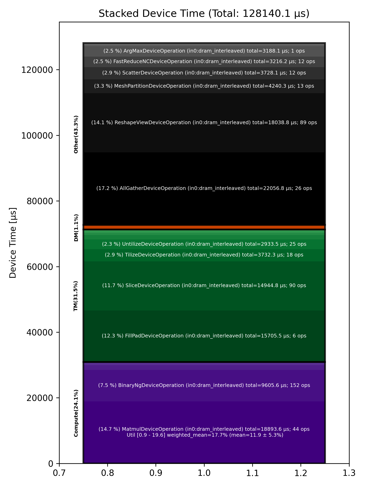

🚀 Performance Report 🚀 ======================== ID Total % Bound OP Code Device Device Time Op-to-Op Gap Cores DRAM DRAM % FLOPs FLOPs % Math Fidelity ------------------------------------------------------------------------------------------------------------------------------------------------------------------------------ 9 0.0 % UntilizeWithUnpaddingDeviceOperation 7 2 μs 1 INT32 => INT32 53 0.0 % TypecastDeviceOperation 19 2 μs 1,847 μs 1 INT32 => UINT32 81 0.0 % ReshapeViewDeviceOperation 15 6 μs 1,165 μs 1 UINT32 => UINT32 103 0.0 % UntilizeWithUnpaddingDeviceOperation 5 2 μs 895 μs 1 UINT32 => UINT32 136 0.0 % EmbeddingsDeviceOperation 6 29 μs 1,176 μs 1 UINT32, BF16 => BF16 174 0.0 % LayerNormDeviceOperation 12 108 μs 1,221 μs 1 BF16, BF16 => BF16 219 0.3 % SLOW MatmulDeviceOperation 32 x 2880 x 512 25 42 μs 31,351 μs 16 40 GB/s 14.0 % 2.3 TFLOPs 6.9 % HiFi2 BF16 x BFP8 => BF16 240 0.0 % ReshapeViewDeviceOperation 14 17 μs 2,923 μs 72 BF16 => BF16 277 0.0 % SliceDeviceOperation 19 10 μs 1,252 μs 72 BF16 => BF16 303 0.0 % TilizeWithValPaddingDeviceOperation 13 7 μs 1,160 μs 1 INT32 => INT32 331 0.0 % TypecastDeviceOperation 9 2 μs 1,160 μs 1 INT32 => FP32 360 0.2 % SLOW MatmulDeviceOperation 32 x 32 x 32 6 7 μs 16,396 μs 1 2 GB/s 0.6 % 0.0 TFLOPs 0.9 % HiFi4 FP32 x FP32 => FP32 401 0.0 % UnaryDeviceOperation 15 3 μs 1,185 μs 1 FP32 => FP32 431 0.0 % ReshapeViewDeviceOperation 13 6 μs 880 μs 1 FP32 => FP32 471 0.0 % BinaryNgDeviceOperation 21 8 μs 1,995 μs 72 FP32, FP32 => FP32 494 0.0 % TypecastDeviceOperation 12 2 μs 684 μs 1 FP32 => BF16 520 0.0 % BinaryNgDeviceOperation 6 28 μs 1,657 μs 72 BF16, BF16 => BF16 553 0.0 % SliceDeviceOperation 7 9 μs 1,105 μs 72 BF16 => BF16 591 0.0 % UnaryDeviceOperation 13 3 μs 1,179 μs 1 FP32 => FP32 630 0.0 % ReshapeViewDeviceOperation 20 6 μs 129 μs 1 FP32 => FP32 671 0.0 % BinaryNgDeviceOperation 29 8 μs 115 μs 72 FP32, FP32 => FP32 685 0.0 % TypecastDeviceOperation 11 2 μs 97 μs 1 FP32 => BF16 733 0.0 % BinaryNgDeviceOperation 27 28 μs 102 μs 72 BF16, BF16 => BF16 748 0.0 % BinaryNgDeviceOperation 10 14 μs 1,525 μs 72 BF16, BF16 => BF16 775 0.0 % BinaryNgDeviceOperation 5 28 μs 163 μs 72 BF16, BF16 => BF16 826 0.0 % BinaryNgDeviceOperation 24 28 μs 96 μs 72 BF16, BF16 => BF16 839 0.0 % BinaryNgDeviceOperation 5 13 μs 1,930 μs 72 BF16, BF16 => BF16 869 0.0 % ConcatDeviceOperation 3 11 μs 1,355 μs 72 BF16, BF16 => BF16 921 0.3 % SLOW MatmulDeviceOperation 32 x 2880 x 64 23 30 μs 27,377 μs 2 12 GB/s 4.3 % 0.4 TFLOPs 9.6 % HiFi2 BF16 x BFP8 => BF16 945 0.0 % ReshapeViewDeviceOperation 15 6 μs 1,985 μs 64 BF16 => BF16 974 0.0 % SliceDeviceOperation 12 2 μs 1,024 μs 32 BF16 => BF16 1024 0.0 % PermuteDeviceOperation 30 5 μs 1,308 μs 32 BF16 => BF16 1026 0.0 % BinaryNgDeviceOperation 0 6 μs 160 μs 72 BF16, BF16 => BF16 1074 0.0 % SliceDeviceOperation 16 2 μs 1,048 μs 32 BF16 => BF16 1092 0.0 % PermuteDeviceOperation 2 4 μs 140 μs 32 BF16 => BF16 1130 0.0 % BinaryNgDeviceOperation 8 6 μs 118 μs 72 BF16, BF16 => BF16 1164 0.0 % BinaryNgDeviceOperation 10 3 μs 113 μs 72 BF16, BF16 => BF16 1201 0.0 % BinaryNgDeviceOperation 15 6 μs 128 μs 72 BF16, BF16 => BF16 1239 0.0 % BinaryNgDeviceOperation 21 6 μs 100 μs 72 BF16, BF16 => BF16 1268 0.0 % BinaryNgDeviceOperation 18 3 μs 100 μs 72 BF16, BF16 => BF16 1295 0.0 % ConcatDeviceOperation 13 2 μs 1,687 μs 64 BF16, BF16 => BF16 1321 0.0 % RepeatDeviceOperation 7 2 μs 1,267 μs 72 INT32 => INT32 1370 0.0 % InterleavedToShardedDeviceOperation 24 1 μs 1,231 μs 32 BF16 => BF16 1405 0.0 % PagedUpdateCacheDeviceOperation 27 5 μs 1,271 μs 32 BF16, BF16 => BF16 1412 0.0 % TilizeWithValPaddingDeviceOperation 2 7 μs 168 μs 1 INT32 => INT32 1470 0.0 % BinaryNgDeviceOperation 28 3 μs 1,587 μs 72 INT32, INT32 => INT32 1483 0.0 % BinaryNgDeviceOperation 9 10 μs 1,579 μs 72 INT32, INT32 => BF16 1537 0.0 % TilizeWithValPaddingDeviceOperation 31 4 μs 1,055 μs 1 BF16 => BF16 1539 0.0 % BinaryNgDeviceOperation 1 6 μs 2,006 μs 72 BF16, BF16 => BF16 1578 0.0 % TilizeWithValPaddingDeviceOperation 8 7 μs 218 μs 1 INT32 => INT32 1613 0.0 % BinaryNgDeviceOperation 11 10 μs 1,529 μs 72 INT32, INT32 => BF16 1660 0.0 % BinaryNgDeviceOperation 26 4 μs 1,793 μs 72 BF16, BF16 => BF16 1670 0.0 % TernaryDeviceOperation 4 25 μs 1,563 μs 72 BF16, BF16 => BF16 1729 0.0 % SLOW MatmulDeviceOperation 32 x 2880 x 64 31 30 μs 381 μs 2 12 GB/s 4.3 % 0.4 TFLOPs 9.6 % HiFi2 BF16 x BFP8 => BF16 1759 0.0 % ReshapeViewDeviceOperation 29 5 μs 173 μs 64 BF16 => BF16 1778 0.0 % PermuteDeviceOperation 16 5 μs 1,418 μs 64 BF16 => BF16 1818 0.0 % InterleavedToShardedDeviceOperation 24 1 μs 163 μs 32 BF16 => BF16 1854 0.0 % PagedUpdateCacheDeviceOperation 28 5 μs 106 μs 32 BF16, BF16 => BF16 1873 0.0 % PermuteDeviceOperation 15 9 μs 1,363 μs 72 BF16 => BF16 1911 0.0 % UntilizeWithUnpaddingDeviceOperation 21 3 μs 1,078 μs 1 BF16 => BF16 1935 0.0 % RepeatDeviceOperation 13 2 μs 1,441 μs 72 BF16 => BF16 1969 0.0 % TilizeWithValPaddingDeviceOperation 15 10 μs 781 μs 1 BF16 => BF16 1995 0.0 % SdpaDecodeDeviceOperation 9 19 μs 2,757 μs 72 BF16, BF16 => BF16 2018 0.0 % InterleavedToShardedDeviceOperation 0 1 μs 309 μs 32 BF16 => BF16 2064 0.0 % NLPConcatHeadsDecodeDeviceOperation 14 4 μs 1,061 μs 8 BF16 => BF16 2084 0.0 % ShardedToInterleavedDeviceOperation 2 1 μs 1,003 μs 8 BF16 => BF16 2124 0.3 % SLOW MatmulDeviceOperation 32 x 512 x 2880 10 15 μs 30,515 μs 45 112 GB/s 39.1 % 6.3 TFLOPs 13.6 % HiFi4 BF16 x BFP8 => BF16 2146 0.7 % AllGatherDeviceOperation 0 74 μs 71,746 μs 24 BF16 => BF16 2204 0.0 % FastReduceNCDeviceOperation 26 9 μs 3,589 μs 72 BF16 => BF16 2237 0.0 % BinaryNgDeviceOperation 27 5 μs 1,800 μs 72 BF16, BF16 => BF16 2255 0.0 % BinaryNgDeviceOperation 13 5 μs 300 μs 72 BF16, BF16 => BF16 2298 0.0 % ReshapeViewDeviceOperation 24 82 μs 3,447 μs 72 BF16 => BF16 2334 0.0 % LayerNormDeviceOperation 28 124 μs 1,158 μs 32 BF16, BF16 => BF16 2340 0.0 % ReshapeViewDeviceOperation 2 54 μs 3,904 μs 72 BF16 => BF16 2384 0.0 % UntilizeDeviceOperation 14 15 μs 1,346 μs 45 BF16 => BF16 2411 0.0 % RepeatDeviceOperation 9 60 μs 1,175 μs 72 BF16 => BF16 2450 0.0 % TilizeDeviceOperation 16 207 μs 1,542 μs 45 BF16 => BF16 2471 0.3 % DRAM MatmulDeviceOperation 32 x 2880 x 5760 5 1,422 μs 33,732 μs 60 193 GB/s 67.0 % 11.9 TFLOPs 19.4 % HiFi4 BF16 x BFP8 => BF16 2503 0.0 % BinaryNgDeviceOperation 5 83 μs 1 μs 72 BF16, BF16 => BF16 2552 0.0 % UntilizeDeviceOperation 22 219 μs 915 μs 60 BF16 => BF16 2578 0.0 % SliceDeviceOperation 16 1,193 μs 1,338 μs 72 BF16 => BF16 2612 0.0 % TilizeDeviceOperation 18 207 μs 1 μs 45 BF16 => BF16 2644 0.0 % UnaryDeviceOperation 18 35 μs 247 μs 72 BF16 => BF16 2685 0.0 % BinaryNgDeviceOperation 27 40 μs 1,456 μs 72 BF16, BF16 => BF16 2691 0.0 % UntilizeDeviceOperation 1 220 μs 123 μs 60 BF16 => BF16 2743 0.0 % SliceDeviceOperation 21 1,193 μs 982 μs 72 BF16 => BF16 2783 0.0 % TilizeDeviceOperation 29 207 μs 1 μs 45 BF16 => BF16 2788 0.0 % UnaryDeviceOperation 2 36 μs 7 μs 72 BF16 => BF16 2826 0.0 % BinaryNgDeviceOperation 8 42 μs 1,359 μs 72 BF16, BF16 => BF16 2873 0.0 % UnaryDeviceOperation 23 55 μs 1,408 μs 72 BF16 => BF16 2896 0.0 % BinaryNgDeviceOperation 14 48 μs 104 μs 72 BF16, BF16 => BF16 2933 0.0 % BinaryNgDeviceOperation 19 47 μs 93 μs 72 BF16, BF16 => BF16 2966 0.3 % SLOW MatmulDeviceOperation 32 x 2880 x 2880 20 937 μs 30,692 μs 45 148 GB/s 51.3 % 9.1 TFLOPs 19.6 % HiFi4 BF16 x BFP8 => BF16 2982 0.0 % BinaryNgDeviceOperation 4 47 μs 1 μs 72 BF16, BF16 => BF16 3027 0.4 % ReshapeViewDeviceOperation 17 1,238 μs 34,547 μs 72 BF16 => BF16 3064 0.0 % TypecastDeviceOperation 22 108 μs 571 μs 72 BF16 => FP32 3088 0.0 % ReshapeViewDeviceOperation 14 90 μs 4,119 μs 72 FP32 => FP32 3127 0.3 % SLOW MatmulDeviceOperation 32 x 2880 x 128 21 43 μs 30,614 μs 4 18 GB/s 6.1 % 0.6 TFLOPs 6.7 % HiFi2 FP32 x BFP8 => FP32 3143 0.0 % TypecastDeviceOperation 5 2 μs 1,447 μs 4 FP32 => BF16 3196 0.0 % TopKDeviceOperation 26 80 μs 1,064 μs 1 BF16 => BF16 3204 0.0 % SliceDeviceOperation 2 1 μs 626 μs 1 BF16 => BF16 3239 0.0 % SliceDeviceOperation 5 1 μs 912 μs 1 UINT16 => UINT16 3269 0.0 % TypecastDeviceOperation 3 2 μs 946 μs 1 UINT16 => INT32 3303 0.0 % ReshapeViewDeviceOperation 5 8 μs 1,204 μs 32 INT32 => INT32 3357 0.0 % UntilizeWithUnpaddingDeviceOperation 27 4 μs 1,160 μs 32 INT32 => INT32 3366 0.0 % UntilizeWithUnpaddingDeviceOperation 4 4 μs 129 μs 32 INT32 => INT32 3404 0.0 % PermuteDeviceOperation 10 3 μs 1,239 μs 32 INT32 => INT32 3436 0.0 % PermuteDeviceOperation 10 3 μs 132 μs 32 INT32 => INT32 3489 0.0 % ConcatDeviceOperation 31 2 μs 1,307 μs 64 INT32, INT32 => INT32 3499 0.0 % PermuteDeviceOperation 9 3 μs 1,048 μs 32 INT32 => INT32 3543 0.0 % TilizeWithValPaddingDeviceOperation 21 8 μs 1,023 μs 32 INT32 => INT32 3578 0.0 % SoftmaxDeviceOperation 24 24 μs 1,469 μs 72 BF16 => BF16 3586 0.7 % AllGatherDeviceOperation 0 86 μs 66,025 μs 24 INT32 => INT32 3618 0.2 % AllGatherDeviceOperation 0 18 μs 24,420 μs 8 BF16 => BF16 3659 0.0 % ReshapeViewDeviceOperation 9 12 μs 1,485 μs 16 INT32 => INT32 3708 0.0 % SliceDeviceOperation 26 3 μs 1,018 μs 16 INT32 => INT32 3725 0.0 % UntilizeWithUnpaddingDeviceOperation 11 14 μs 912 μs 16 INT32 => INT32 3757 0.0 % SliceDeviceOperation 11 6 μs 1,893 μs 72 INT32 => INT32 3804 0.0 % TilizeWithValPaddingDeviceOperation 26 8 μs 906 μs 16 INT32 => INT32 3840 0.0 % BinaryNgDeviceOperation 30 12 μs 1,614 μs 72 INT32, INT32 => INT32 3864 0.0 % BinaryNgDeviceOperation 22 4 μs 1,567 μs 72 INT32, INT32 => INT32 3889 0.0 % ReshapeViewDeviceOperation 15 7 μs 988 μs 16 INT32 => INT32 3907 0.0 % ReshapeViewDeviceOperation 1 4 μs 1,207 μs 16 BF16 => BF16 3964 0.0 % UntilizeWithUnpaddingDeviceOperation 26 12 μs 997 μs 1 INT32 => INT32 4000 0.0 % SliceDeviceOperation 30 1 μs 760 μs 1 INT32 => INT32 4012 0.0 % TilizeWithValPaddingDeviceOperation 10 44 μs 946 μs 1 INT32 => INT32 4055 0.0 % UntilizeWithUnpaddingDeviceOperation 21 10 μs 1,068 μs 1 BF16 => BF16 4075 0.0 % SliceDeviceOperation 9 1 μs 531 μs 1 BF16 => BF16 4123 0.0 % TilizeWithValPaddingDeviceOperation 25 23 μs 1,064 μs 1 BF16 => BF16 4150 0.0 % UntilizeWithUnpaddingDeviceOperation 20 7 μs 1,080 μs 1 INT32 => INT32 4178 0.0 % UntilizeWithUnpaddingDeviceOperation 16 6 μs 972 μs 1 BF16 => BF16 4224 0.0 % ScatterDeviceOperation 30 313 μs 1,027 μs 1 BF16, INT32 => BF16 4247 0.0 % TilizeWithValPaddingDeviceOperation 21 31 μs 1,390 μs 64 BF16 => BF16 4281 0.0 % UntilizeWithUnpaddingDeviceOperation 23 12 μs 199 μs 1 INT32 => INT32 4301 0.0 % SliceDeviceOperation 11 1 μs 529 μs 1 INT32 => INT32 4335 0.0 % TilizeWithValPaddingDeviceOperation 13 44 μs 127 μs 1 INT32 => INT32 4370 0.0 % UntilizeWithUnpaddingDeviceOperation 16 10 μs 67 μs 1 BF16 => BF16 4395 0.0 % SliceDeviceOperation 9 1 μs 750 μs 1 BF16 => BF16 4426 0.0 % TilizeWithValPaddingDeviceOperation 8 23 μs 122 μs 1 BF16 => BF16 4457 0.0 % UntilizeWithUnpaddingDeviceOperation 7 7 μs 89 μs 1 INT32 => INT32 4499 0.0 % UntilizeWithUnpaddingDeviceOperation 17 6 μs 85 μs 1 BF16 => BF16 4517 0.0 % UntilizeWithUnpaddingDeviceOperation 3 10 μs 1,539 μs 64 BF16 => BF16 4565 0.0 % ScatterDeviceOperation 19 309 μs 313 μs 1 BF16, INT32 => BF16 4586 0.0 % TilizeWithValPaddingDeviceOperation 8 32 μs 1 μs 64 BF16 => BF16 4640 0.0 % ReshapeViewDeviceOperation 30 25 μs 1,235 μs 16 BF16 => BF16 4663 0.1 % MeshPartitionDeviceOperation 21 1 μs 13,609 μs 4 BF16 => BF16 4692 0.0 % UntilizeDeviceOperation 18 6 μs 1,179 μs 1 BF16 => BF16 4717 0.2 % MeshPartitionDeviceOperation 11 2 μs 20,362 μs 32 BF16 => BF16 4745 0.0 % TilizeWithValPaddingDeviceOperation 7 4 μs 979 μs 1 BF16 => BF16 4772 0.0 % TransposeDeviceOperation 2 2 μs 1,622 μs 72 BF16 => BF16 4814 0.0 % ReshapeViewDeviceOperation 12 50 μs 1,527 μs 72 BF16 => BF16 4862 0.0 % BinaryNgDeviceOperation 28 928 μs 151 μs 72 BF16, BF16 => BF16 4877 0.0 % FillPadDeviceOperation 11 2,619 μs 375 μs 72 BF16 => BF16 4905 0.0 % FastReduceNCDeviceOperation 7 529 μs 10 μs 72 BF16 => BF16 4948 0.0 % SliceDeviceOperation 18 64 μs 6 μs 72 BF16 => BF16 4962 0.7 % ReduceScatterDeviceOperation 0 182 μs 67,057 μs 24 BF16 => BF16 4994 1.0 % AllGatherDeviceOperation 0 186 μs 98,499 μs 40 BF16 => BF16 5026 0.0 % BinaryNgDeviceOperation 0 84 μs 171 μs 72 BF16, BF16 => BF16 5083 0.0 % ReshapeViewDeviceOperation 25 54 μs 456 μs 72 BF16 => BF16 5095 0.0 % LayerNormDeviceOperation 5 108 μs 97 μs 1 BF16, BF16 => BF16 5135 0.0 % SLOW MatmulDeviceOperation 32 x 2880 x 512 13 42 μs 1,108 μs 16 41 GB/s 14.1 % 2.3 TFLOPs 6.9 % HiFi2 BF16 x BFP8 => BF16 5171 0.0 % ReshapeViewDeviceOperation 17 17 μs 129 μs 72 BF16 => BF16 5198 0.0 % SliceDeviceOperation 12 10 μs 240 μs 72 BF16 => BF16 5241 0.0 % BinaryNgDeviceOperation 23 28 μs 343 μs 72 BF16, BF16 => BF16 5263 0.0 % SliceDeviceOperation 13 9 μs 303 μs 72 BF16 => BF16 5292 0.0 % BinaryNgDeviceOperation 10 28 μs 351 μs 72 BF16, BF16 => BF16 5327 0.0 % BinaryNgDeviceOperation 13 14 μs 295 μs 72 BF16, BF16 => BF16 5357 0.0 % BinaryNgDeviceOperation 11 28 μs 330 μs 72 BF16, BF16 => BF16 5399 0.0 % BinaryNgDeviceOperation 21 28 μs 292 μs 72 BF16, BF16 => BF16 5423 0.0 % BinaryNgDeviceOperation 13 15 μs 89 μs 72 BF16, BF16 => BF16 5455 0.0 % ConcatDeviceOperation 13 12 μs 226 μs 72 BF16, BF16 => BF16 5481 0.0 % SLOW MatmulDeviceOperation 32 x 2880 x 64 7 30 μs 960 μs 2 12 GB/s 4.3 % 0.4 TFLOPs 9.6 % HiFi2 BF16 x BFP8 => BF16 5537 0.0 % ReshapeViewDeviceOperation 31 5 μs 123 μs 64 BF16 => BF16 5557 0.0 % SliceDeviceOperation 19 2 μs 268 μs 32 BF16 => BF16 5591 0.0 % PermuteDeviceOperation 21 4 μs 251 μs 32 BF16 => BF16 5626 0.0 % BinaryNgDeviceOperation 24 6 μs 265 μs 72 BF16, BF16 => BF16 5660 0.0 % SliceDeviceOperation 26 2 μs 239 μs 32 BF16 => BF16 5678 0.0 % PermuteDeviceOperation 12 4 μs 265 μs 32 BF16 => BF16 5709 0.0 % BinaryNgDeviceOperation 11 6 μs 336 μs 72 BF16, BF16 => BF16 5743 0.0 % BinaryNgDeviceOperation 13 3 μs 104 μs 72 BF16, BF16 => BF16 5762 0.0 % BinaryNgDeviceOperation 0 6 μs 159 μs 72 BF16, BF16 => BF16 5797 0.0 % BinaryNgDeviceOperation 3 6 μs 242 μs 72 BF16, BF16 => BF16 5828 0.0 % BinaryNgDeviceOperation 2 3 μs 243 μs 72 BF16, BF16 => BF16 5883 0.0 % ConcatDeviceOperation 25 3 μs 113 μs 64 BF16, BF16 => BF16 5906 0.0 % InterleavedToShardedDeviceOperation 16 1 μs 187 μs 32 BF16 => BF16 5943 0.0 % PagedUpdateCacheDeviceOperation 21 5 μs 216 μs 32 BF16, BF16 => BF16 5965 0.0 % TernaryDeviceOperation 11 25 μs 310 μs 72 BF16, BF16 => BF16 6002 0.0 % SLOW MatmulDeviceOperation 32 x 2880 x 64 16 30 μs 491 μs 2 13 GB/s 4.3 % 0.4 TFLOPs 9.6 % HiFi2 BF16 x BFP8 => BF16 6019 0.0 % ReshapeViewDeviceOperation 1 6 μs 120 μs 64 BF16 => BF16 6062 0.0 % PermuteDeviceOperation 12 5 μs 173 μs 64 BF16 => BF16 6087 0.0 % InterleavedToShardedDeviceOperation 5 1 μs 272 μs 32 BF16 => BF16 6129 0.0 % PagedUpdateCacheDeviceOperation 15 5 μs 224 μs 32 BF16, BF16 => BF16 6177 0.0 % PermuteDeviceOperation 31 10 μs 100 μs 72 BF16 => BF16 6204 0.0 % UntilizeWithUnpaddingDeviceOperation 26 3 μs 171 μs 1 BF16 => BF16 6225 0.0 % RepeatDeviceOperation 15 2 μs 242 μs 72 BF16 => BF16 6243 0.0 % TilizeWithValPaddingDeviceOperation 1 10 μs 250 μs 1 BF16 => BF16 6284 0.0 % SdpaDecodeDeviceOperation 10 19 μs 405 μs 72 BF16, BF16 => BF16 6325 0.0 % InterleavedToShardedDeviceOperation 19 1 μs 129 μs 32 BF16 => BF16 6354 0.0 % NLPConcatHeadsDecodeDeviceOperation 16 4 μs 229 μs 8 BF16 => BF16 6375 0.0 % ShardedToInterleavedDeviceOperation 5 1 μs 258 μs 8 BF16 => BF16 6427 36.5 % SLOW MatmulDeviceOperation 32 x 512 x 2880 25 15 μs 3,690,702 μs 45 113 GB/s 39.1 % 6.3 TFLOPs 13.6 % HiFi4 BF16 x BFP8 => BF16 6434 0.0 % AllGatherDeviceOperation 0 87 μs 770 μs 24 BF16 => BF16 6474 0.0 % FastReduceNCDeviceOperation 8 10 μs 221 μs 72 BF16 => BF16 6525 0.0 % BinaryNgDeviceOperation 27 5 μs 160 μs 72 BF16, BF16 => BF16 6533 0.0 % ReshapeViewDeviceOperation 3 82 μs 239 μs 72 BF16 => BF16 6577 0.0 % BinaryNgDeviceOperation 15 83 μs 312 μs 72 BF16, BF16 => BF16 6599 0.0 % LayerNormDeviceOperation 5 124 μs 2,034 μs 32 BF16, BF16 => BF16 6650 0.0 % ReshapeViewDeviceOperation 24 54 μs 212 μs 72 BF16 => BF16 6672 0.0 % UntilizeDeviceOperation 14 15 μs 81 μs 45 BF16 => BF16 6698 0.0 % RepeatDeviceOperation 8 60 μs 190 μs 72 BF16 => BF16 6740 0.0 % TilizeDeviceOperation 18 207 μs 65 μs 45 BF16 => BF16 6761 0.0 % DRAM MatmulDeviceOperation 32 x 2880 x 5760 7 1,423 μs 302 μs 60 193 GB/s 66.9 % 11.9 TFLOPs 19.4 % HiFi4 BF16 x BFP8 => BF16 6791 0.0 % BinaryNgDeviceOperation 5 87 μs 1 μs 72 BF16, BF16 => BF16 6832 0.0 % UntilizeDeviceOperation 14 220 μs 1 μs 60 BF16 => BF16 6866 0.0 % SliceDeviceOperation 16 1,194 μs 1 μs 72 BF16 => BF16 6911 0.0 % TilizeDeviceOperation 29 207 μs 1 μs 45 BF16 => BF16 6941 0.0 % UnaryDeviceOperation 27 35 μs 1 μs 72 BF16 => BF16 6955 0.0 % BinaryNgDeviceOperation 9 39 μs 1 μs 72 BF16, BF16 => BF16 6989 0.0 % UntilizeDeviceOperation 11 221 μs 1 μs 60 BF16 => BF16 7020 0.0 % SliceDeviceOperation 10 1,194 μs 1 μs 72 BF16 => BF16 7050 0.0 % TilizeDeviceOperation 8 208 μs 1 μs 45 BF16 => BF16 7075 0.0 % UnaryDeviceOperation 1 34 μs 1 μs 72 BF16 => BF16 7119 0.0 % BinaryNgDeviceOperation 13 40 μs 1 μs 72 BF16, BF16 => BF16 7165 0.0 % UnaryDeviceOperation 27 54 μs 1 μs 72 BF16 => BF16 7171 0.0 % BinaryNgDeviceOperation 1 49 μs 1 μs 72 BF16, BF16 => BF16 7229 0.0 % BinaryNgDeviceOperation 27 48 μs 1 μs 72 BF16, BF16 => BF16 7249 0.0 % SLOW MatmulDeviceOperation 32 x 2880 x 2880 15 939 μs 1 μs 45 148 GB/s 51.3 % 9.0 TFLOPs 19.6 % HiFi4 BF16 x BFP8 => BF16 7290 0.0 % BinaryNgDeviceOperation 24 48 μs 1 μs 72 BF16, BF16 => BF16 7301 0.0 % ReshapeViewDeviceOperation 3 1,236 μs 1 μs 72 BF16 => BF16 7349 0.0 % TypecastDeviceOperation 19 108 μs 1 μs 72 BF16 => FP32 7385 0.0 % ReshapeViewDeviceOperation 23 90 μs 1 μs 72 FP32 => FP32 7395 0.0 % SLOW MatmulDeviceOperation 32 x 2880 x 128 1 43 μs 1 μs 4 18 GB/s 6.1 % 0.6 TFLOPs 6.7 % HiFi2 FP32 x BFP8 => FP32 7426 0.0 % TypecastDeviceOperation 0 3 μs 1 μs 4 FP32 => BF16 7461 0.0 % TopKDeviceOperation 3 80 μs 2 μs 1 BF16 => BF16 7506 0.0 % SliceDeviceOperation 16 1 μs 2 μs 1 BF16 => BF16 7549 0.0 % SliceDeviceOperation 27 1 μs 2 μs 1 UINT16 => UINT16 7563 0.0 % TypecastDeviceOperation 9 2 μs 2 μs 1 UINT16 => INT32 7615 0.0 % ReshapeViewDeviceOperation 29 9 μs 1 μs 32 INT32 => INT32 7621 0.0 % UntilizeWithUnpaddingDeviceOperation 3 5 μs 1 μs 32 INT32 => INT32 7666 0.0 % UntilizeWithUnpaddingDeviceOperation 16 5 μs 1 μs 32 INT32 => INT32 7698 0.0 % PermuteDeviceOperation 16 4 μs 1 μs 32 INT32 => INT32 7719 0.0 % PermuteDeviceOperation 5 4 μs 1 μs 32 INT32 => INT32 7774 0.0 % ConcatDeviceOperation 28 3 μs 1 μs 64 INT32, INT32 => INT32 7778 0.0 % PermuteDeviceOperation 0 4 μs 1 μs 32 INT32 => INT32 7825 0.0 % TilizeWithValPaddingDeviceOperation 15 9 μs 1 μs 32 INT32 => INT32 7859 0.0 % SoftmaxDeviceOperation 17 25 μs 1 μs 72 BF16 => BF16 7874 0.0 % AllGatherDeviceOperation 0 93 μs 668 μs 24 INT32 => INT32 7906 0.0 % AllGatherDeviceOperation 0 21 μs 292 μs 8 BF16 => BF16 7962 0.0 % ReshapeViewDeviceOperation 24 11 μs 110 μs 16 INT32 => INT32 7992 0.0 % SliceDeviceOperation 22 3 μs 263 μs 16 INT32 => INT32 8016 0.0 % UntilizeWithUnpaddingDeviceOperation 14 14 μs 261 μs 16 INT32 => INT32 8048 0.0 % SliceDeviceOperation 14 6 μs 283 μs 72 INT32 => INT32 8084 0.0 % TilizeWithValPaddingDeviceOperation 18 8 μs 219 μs 16 INT32 => INT32 8125 0.0 % BinaryNgDeviceOperation 27 13 μs 122 μs 72 INT32, INT32 => INT32 8145 0.0 % BinaryNgDeviceOperation 15 4 μs 159 μs 72 INT32, INT32 => INT32 8178 0.0 % ReshapeViewDeviceOperation 16 7 μs 244 μs 16 INT32 => INT32 8221 0.0 % ReshapeViewDeviceOperation 27 3 μs 234 μs 16 BF16 => BF16 8249 0.0 % UntilizeWithUnpaddingDeviceOperation 23 12 μs 249 μs 1 INT32 => INT32 8265 0.0 % SliceDeviceOperation 7 1 μs 112 μs 1 INT32 => INT32 8300 0.0 % TilizeWithValPaddingDeviceOperation 10 44 μs 144 μs 1 INT32 => INT32 8348 0.0 % UntilizeWithUnpaddingDeviceOperation 26 10 μs 72 μs 1 BF16 => BF16 8383 0.0 % SliceDeviceOperation 29 1 μs 147 μs 1 BF16 => BF16 8405 0.0 % TilizeWithValPaddingDeviceOperation 19 23 μs 102 μs 1 BF16 => BF16 8427 0.0 % UntilizeWithUnpaddingDeviceOperation 9 7 μs 152 μs 1 INT32 => INT32 8466 0.0 % UntilizeWithUnpaddingDeviceOperation 16 6 μs 253 μs 1 BF16 => BF16 8491 0.0 % ScatterDeviceOperation 9 313 μs 257 μs 1 BF16, INT32 => BF16 8539 0.0 % TilizeWithValPaddingDeviceOperation 25 32 μs 1 μs 64 BF16 => BF16 8569 0.0 % UntilizeWithUnpaddingDeviceOperation 23 12 μs 194 μs 1 INT32 => INT32 8579 0.0 % SliceDeviceOperation 1 1 μs 231 μs 1 INT32 => INT32 8618 0.0 % TilizeWithValPaddingDeviceOperation 8 44 μs 101 μs 1 INT32 => INT32 8650 0.0 % UntilizeWithUnpaddingDeviceOperation 8 10 μs 123 μs 1 BF16 => BF16 8691 0.0 % SliceDeviceOperation 17 1 μs 82 μs 1 BF16 => BF16 8712 0.0 % TilizeWithValPaddingDeviceOperation 6 23 μs 170 μs 1 BF16 => BF16 8768 0.0 % UntilizeWithUnpaddingDeviceOperation 30 7 μs 70 μs 1 INT32 => INT32 8778 0.0 % UntilizeWithUnpaddingDeviceOperation 8 6 μs 176 μs 1 BF16 => BF16 8805 0.0 % UntilizeWithUnpaddingDeviceOperation 3 10 μs 88 μs 64 BF16 => BF16 8852 0.0 % ScatterDeviceOperation 18 309 μs 193 μs 1 BF16, INT32 => BF16 8893 0.0 % TilizeWithValPaddingDeviceOperation 27 31 μs 32 μs 64 BF16 => BF16 8913 0.0 % ReshapeViewDeviceOperation 15 25 μs 71 μs 16 BF16 => BF16 8956 0.0 % MeshPartitionDeviceOperation 26 1 μs 483 μs 4 BF16 => BF16 8991 0.0 % UntilizeDeviceOperation 29 6 μs 137 μs 1 BF16 => BF16 9016 0.0 % MeshPartitionDeviceOperation 22 2 μs 748 μs 32 BF16 => BF16 9030 0.0 % TilizeWithValPaddingDeviceOperation 4 4 μs 135 μs 1 BF16 => BF16 9075 0.0 % TransposeDeviceOperation 17 2 μs 169 μs 72 BF16 => BF16 9095 0.0 % ReshapeViewDeviceOperation 5 50 μs 258 μs 72 BF16 => BF16 9144 0.0 % BinaryNgDeviceOperation 22 943 μs 226 μs 72 BF16, BF16 => BF16 9167 0.0 % FillPadDeviceOperation 13 2,616 μs 1 μs 72 BF16 => BF16 9197 0.0 % FastReduceNCDeviceOperation 11 527 μs 1 μs 72 BF16 => BF16 9220 0.0 % SliceDeviceOperation 2 66 μs 1 μs 72 BF16 => BF16 9250 0.0 % ReduceScatterDeviceOperation 0 226 μs 1 μs 24 BF16 => BF16 9282 0.0 % AllGatherDeviceOperation 0 163 μs 1 μs 40 BF16 => BF16 9317 0.0 % BinaryNgDeviceOperation 3 86 μs 1 μs 72 BF16, BF16 => BF16 9370 0.0 % ReshapeViewDeviceOperation 24 54 μs 1 μs 72 BF16 => BF16 9401 0.0 % LayerNormDeviceOperation 23 108 μs 1 μs 1 BF16, BF16 => BF16 9433 0.0 % SLOW MatmulDeviceOperation 32 x 2880 x 512 23 44 μs 1 μs 16 39 GB/s 13.4 % 2.2 TFLOPs 6.6 % HiFi2 BF16 x BFP8 => BF16 9449 0.0 % ReshapeViewDeviceOperation 7 18 μs 1 μs 72 BF16 => BF16 9497 0.0 % SliceDeviceOperation 23 10 μs 1 μs 72 BF16 => BF16 9509 0.0 % BinaryNgDeviceOperation 3 28 μs 1 μs 72 BF16, BF16 => BF16 9545 0.0 % SliceDeviceOperation 7 9 μs 1 μs 72 BF16 => BF16 9598 0.0 % BinaryNgDeviceOperation 28 28 μs 1 μs 72 BF16, BF16 => BF16 9609 0.0 % BinaryNgDeviceOperation 7 14 μs 1 μs 72 BF16, BF16 => BF16 9654 0.0 % BinaryNgDeviceOperation 20 28 μs 1 μs 72 BF16, BF16 => BF16 9687 0.0 % BinaryNgDeviceOperation 21 28 μs 206 μs 72 BF16, BF16 => BF16 9711 0.0 % BinaryNgDeviceOperation 13 14 μs 246 μs 72 BF16, BF16 => BF16 9737 0.0 % ConcatDeviceOperation 7 12 μs 268 μs 72 BF16, BF16 => BF16 9781 0.0 % SLOW MatmulDeviceOperation 32 x 2880 x 64 19 30 μs 607 μs 2 13 GB/s 4.3 % 0.4 TFLOPs 9.6 % HiFi2 BF16 x BFP8 => BF16 9823 0.0 % ReshapeViewDeviceOperation 29 5 μs 123 μs 64 BF16 => BF16 9855 0.0 % SliceDeviceOperation 29 2 μs 171 μs 32 BF16 => BF16 9873 0.0 % PermuteDeviceOperation 15 4 μs 242 μs 32 BF16 => BF16 9901 0.0 % BinaryNgDeviceOperation 11 6 μs 114 μs 72 BF16, BF16 => BF16 9923 0.0 % SliceDeviceOperation 1 2 μs 162 μs 32 BF16 => BF16 9954 0.0 % PermuteDeviceOperation 0 4 μs 240 μs 32 BF16 => BF16 10011 0.0 % BinaryNgDeviceOperation 25 6 μs 90 μs 72 BF16, BF16 => BF16 10022 0.0 % BinaryNgDeviceOperation 4 3 μs 166 μs 72 BF16, BF16 => BF16 10081 0.0 % BinaryNgDeviceOperation 31 6 μs 257 μs 72 BF16, BF16 => BF16 10097 0.0 % BinaryNgDeviceOperation 15 6 μs 246 μs 72 BF16, BF16 => BF16 10142 0.0 % BinaryNgDeviceOperation 28 3 μs 91 μs 72 BF16, BF16 => BF16 10169 0.0 % ConcatDeviceOperation 23 2 μs 164 μs 64 BF16, BF16 => BF16 10198 0.0 % InterleavedToShardedDeviceOperation 20 1 μs 297 μs 32 BF16 => BF16 10212 0.0 % PagedUpdateCacheDeviceOperation 2 5 μs 237 μs 32 BF16, BF16 => BF16 10259 0.0 % SLOW MatmulDeviceOperation 32 x 2880 x 64 17 30 μs 534 μs 2 13 GB/s 4.3 % 0.4 TFLOPs 9.6 % HiFi2 BF16 x BFP8 => BF16 10281 0.0 % ReshapeViewDeviceOperation 7 5 μs 99 μs 64 BF16 => BF16 10323 0.0 % PermuteDeviceOperation 17 5 μs 185 μs 64 BF16 => BF16 10341 0.0 % InterleavedToShardedDeviceOperation 3 1 μs 259 μs 32 BF16 => BF16 10399 0.0 % PagedUpdateCacheDeviceOperation 29 5 μs 222 μs 32 BF16, BF16 => BF16 10424 0.0 % PermuteDeviceOperation 22 9 μs 107 μs 72 BF16 => BF16 10453 0.0 % SdpaDecodeDeviceOperation 19 18 μs 304 μs 72 BF16, BF16 => BF16 10475 0.0 % InterleavedToShardedDeviceOperation 9 1 μs 136 μs 32 BF16 => BF16 10527 0.0 % NLPConcatHeadsDecodeDeviceOperation 29 4 μs 233 μs 8 BF16 => BF16 10537 0.0 % ShardedToInterleavedDeviceOperation 7 1 μs 265 μs 8 BF16 => BF16 10582 0.0 % SLOW MatmulDeviceOperation 32 x 512 x 2880 20 15 μs 594 μs 45 112 GB/s 39.0 % 6.3 TFLOPs 13.6 % HiFi4 BF16 x BFP8 => BF16 10594 0.0 % AllGatherDeviceOperation 0 72 μs 390 μs 24 BF16 => BF16 10645 0.0 % FastReduceNCDeviceOperation 19 10 μs 56 μs 72 BF16 => BF16 10670 0.0 % BinaryNgDeviceOperation 12 5 μs 188 μs 72 BF16, BF16 => BF16 10698 0.0 % ReshapeViewDeviceOperation 8 83 μs 341 μs 72 BF16 => BF16 10745 0.0 % BinaryNgDeviceOperation 23 86 μs 178 μs 72 BF16, BF16 => BF16 10763 0.0 % LayerNormDeviceOperation 9 124 μs 162 μs 32 BF16, BF16 => BF16 10803 0.0 % ReshapeViewDeviceOperation 17 54 μs 116 μs 72 BF16 => BF16 10819 0.0 % UntilizeDeviceOperation 1 15 μs 45 μs 45 BF16 => BF16 10850 0.0 % RepeatDeviceOperation 0 60 μs 138 μs 72 BF16 => BF16 10882 0.0 % TilizeDeviceOperation 0 208 μs 34 μs 45 BF16 => BF16 10928 0.0 % DRAM MatmulDeviceOperation 32 x 2880 x 5760 14 1,423 μs 231 μs 60 193 GB/s 66.9 % 11.9 TFLOPs 19.4 % HiFi4 BF16 x BFP8 => BF16 10965 0.0 % BinaryNgDeviceOperation 19 83 μs 1 μs 72 BF16, BF16 => BF16 10978 0.0 % UntilizeDeviceOperation 0 219 μs 1 μs 60 BF16 => BF16 11019 0.0 % SliceDeviceOperation 9 1,194 μs 1 μs 72 BF16 => BF16 11073 0.0 % TilizeDeviceOperation 31 208 μs 1 μs 45 BF16 => BF16 11092 0.0 % UnaryDeviceOperation 18 35 μs 1 μs 72 BF16 => BF16 11107 0.0 % BinaryNgDeviceOperation 1 39 μs 1 μs 72 BF16, BF16 => BF16 11152 0.0 % UntilizeDeviceOperation 14 221 μs 1 μs 60 BF16 => BF16 11171 0.0 % SliceDeviceOperation 1 1,193 μs 1 μs 72 BF16 => BF16 11202 0.0 % TilizeDeviceOperation 0 208 μs 1 μs 45 BF16 => BF16 11245 0.0 % UnaryDeviceOperation 11 35 μs 1 μs 72 BF16 => BF16 11273 0.0 % BinaryNgDeviceOperation 7 42 μs 1 μs 72 BF16, BF16 => BF16 11322 0.0 % UnaryDeviceOperation 24 54 μs 1 μs 72 BF16 => BF16 11336 0.0 % BinaryNgDeviceOperation 6 49 μs 1 μs 72 BF16, BF16 => BF16 11373 0.0 % BinaryNgDeviceOperation 11 49 μs 1 μs 72 BF16, BF16 => BF16 11401 0.0 % SLOW MatmulDeviceOperation 32 x 2880 x 2880 7 939 μs 1 μs 45 148 GB/s 51.3 % 9.0 TFLOPs 19.6 % HiFi4 BF16 x BFP8 => BF16 11455 0.0 % BinaryNgDeviceOperation 29 49 μs 1 μs 72 BF16, BF16 => BF16 11467 0.0 % ReshapeViewDeviceOperation 9 1,240 μs 1 μs 72 BF16 => BF16 11513 0.0 % TypecastDeviceOperation 23 106 μs 1 μs 72 BF16 => FP32 11547 0.0 % ReshapeViewDeviceOperation 25 89 μs 1 μs 72 FP32 => FP32 11557 0.0 % SLOW MatmulDeviceOperation 32 x 2880 x 128 3 43 μs 1 μs 4 18 GB/s 6.1 % 0.6 TFLOPs 6.7 % HiFi2 FP32 x BFP8 => FP32 11594 0.0 % TypecastDeviceOperation 8 3 μs 1 μs 4 FP32 => BF16 11648 0.0 % TopKDeviceOperation 30 80 μs 2 μs 1 BF16 => BF16 11681 0.0 % SliceDeviceOperation 31 1 μs 2 μs 1 BF16 => BF16 11697 0.0 % SliceDeviceOperation 15 1 μs 2 μs 1 UINT16 => UINT16 11719 0.0 % TypecastDeviceOperation 5 2 μs 2 μs 1 UINT16 => INT32 11776 0.0 % ReshapeViewDeviceOperation 30 9 μs 1 μs 32 INT32 => INT32 11808 0.0 % UntilizeWithUnpaddingDeviceOperation 30 5 μs 1 μs 32 INT32 => INT32 11832 0.0 % UntilizeWithUnpaddingDeviceOperation 22 5 μs 1 μs 32 INT32 => INT32 11857 0.0 % PermuteDeviceOperation 15 4 μs 1 μs 32 INT32 => INT32 11899 0.0 % PermuteDeviceOperation 25 4 μs 1 μs 32 INT32 => INT32 11912 0.0 % ConcatDeviceOperation 6 3 μs 1 μs 64 INT32, INT32 => INT32 11962 0.0 % PermuteDeviceOperation 24 4 μs 1 μs 32 INT32 => INT32 11986 0.0 % TilizeWithValPaddingDeviceOperation 16 9 μs 1 μs 32 INT32 => INT32 12021 0.0 % SoftmaxDeviceOperation 19 25 μs 1 μs 72 BF16 => BF16 12034 0.0 % AllGatherDeviceOperation 0 87 μs 1 μs 24 INT32 => INT32 12066 0.0 % AllGatherDeviceOperation 0 11 μs 1 μs 8 BF16 => BF16 12129 0.0 % ReshapeViewDeviceOperation 31 11 μs 1 μs 16 INT32 => INT32 12135 0.0 % SliceDeviceOperation 5 3 μs 1 μs 16 INT32 => INT32 12190 0.0 % UntilizeWithUnpaddingDeviceOperation 28 15 μs 1 μs 16 INT32 => INT32 12201 0.0 % SliceDeviceOperation 7 6 μs 140 μs 72 INT32 => INT32 12231 0.0 % TilizeWithValPaddingDeviceOperation 5 8 μs 229 μs 16 INT32 => INT32 12272 0.0 % BinaryNgDeviceOperation 14 13 μs 110 μs 72 INT32, INT32 => INT32 12301 0.0 % BinaryNgDeviceOperation 11 4 μs 152 μs 72 INT32, INT32 => INT32 12336 0.0 % ReshapeViewDeviceOperation 14 7 μs 251 μs 16 INT32 => INT32 12377 0.0 % ReshapeViewDeviceOperation 23 4 μs 244 μs 16 BF16 => BF16 12413 0.0 % UntilizeWithUnpaddingDeviceOperation 27 11 μs 88 μs 1 INT32 => INT32 12441 0.0 % SliceDeviceOperation 23 1 μs 156 μs 1 INT32 => INT32 12465 0.0 % TilizeWithValPaddingDeviceOperation 15 44 μs 95 μs 1 INT32 => INT32 12482 0.0 % UntilizeWithUnpaddingDeviceOperation 0 10 μs 211 μs 1 BF16 => BF16 12535 0.0 % SliceDeviceOperation 21 1 μs 75 μs 1 BF16 => BF16 12555 0.0 % TilizeWithValPaddingDeviceOperation 9 23 μs 156 μs 1 BF16 => BF16 12601 0.0 % UntilizeWithUnpaddingDeviceOperation 23 7 μs 76 μs 1 INT32 => INT32 12623 0.0 % UntilizeWithUnpaddingDeviceOperation 13 6 μs 215 μs 1 BF16 => BF16 12666 0.0 % ScatterDeviceOperation 24 313 μs 89 μs 1 BF16, INT32 => BF16 12687 0.0 % TilizeWithValPaddingDeviceOperation 13 32 μs 1 μs 64 BF16 => BF16 12736 0.0 % UntilizeWithUnpaddingDeviceOperation 30 12 μs 90 μs 1 INT32 => INT32 12763 0.0 % SliceDeviceOperation 25 1 μs 229 μs 1 INT32 => INT32 12776 0.0 % TilizeWithValPaddingDeviceOperation 6 44 μs 93 μs 1 INT32 => INT32 12823 0.0 % UntilizeWithUnpaddingDeviceOperation 21 10 μs 138 μs 1 BF16 => BF16 12848 0.0 % SliceDeviceOperation 14 1 μs 73 μs 1 BF16 => BF16 12894 0.0 % TilizeWithValPaddingDeviceOperation 28 23 μs 176 μs 1 BF16 => BF16 12907 0.0 % UntilizeWithUnpaddingDeviceOperation 9 7 μs 69 μs 1 INT32 => INT32 12946 0.0 % UntilizeWithUnpaddingDeviceOperation 16 6 μs 161 μs 1 BF16 => BF16 12968 0.0 % UntilizeWithUnpaddingDeviceOperation 6 10 μs 83 μs 64 BF16 => BF16 13017 0.0 % ScatterDeviceOperation 23 309 μs 169 μs 1 BF16, INT32 => BF16 13048 0.0 % TilizeWithValPaddingDeviceOperation 22 32 μs 1 μs 64 BF16 => BF16 13082 0.0 % ReshapeViewDeviceOperation 24 25 μs 1 μs 16 BF16 => BF16 13104 0.0 % MeshPartitionDeviceOperation 14 1 μs 195 μs 4 BF16 => BF16 13140 0.0 % UntilizeDeviceOperation 18 6 μs 140 μs 1 BF16 => BF16 13162 0.0 % MeshPartitionDeviceOperation 8 2 μs 694 μs 32 BF16 => BF16 13213 0.0 % TilizeWithValPaddingDeviceOperation 27 4 μs 107 μs 1 BF16 => BF16 13230 0.0 % TransposeDeviceOperation 12 2 μs 179 μs 72 BF16 => BF16 13255 0.0 % ReshapeViewDeviceOperation 5 50 μs 102 μs 72 BF16 => BF16 13295 0.0 % BinaryNgDeviceOperation 13 938 μs 137 μs 72 BF16, BF16 => BF16 13314 0.0 % FillPadDeviceOperation 0 2,619 μs 1 μs 72 BF16 => BF16 13355 0.0 % FastReduceNCDeviceOperation 9 526 μs 1 μs 72 BF16 => BF16 13384 0.0 % SliceDeviceOperation 6 65 μs 1 μs 72 BF16 => BF16 13410 0.0 % ReduceScatterDeviceOperation 0 227 μs 1 μs 24 BF16 => BF16 13442 0.0 % AllGatherDeviceOperation 0 162 μs 1 μs 40 BF16 => BF16 13474 0.0 % BinaryNgDeviceOperation 0 85 μs 1 μs 72 BF16, BF16 => BF16 13524 0.0 % ReshapeViewDeviceOperation 18 54 μs 1 μs 72 BF16 => BF16 13541 0.0 % LayerNormDeviceOperation 3 108 μs 1 μs 1 BF16, BF16 => BF16 13588 0.0 % SLOW MatmulDeviceOperation 32 x 2880 x 512 18 44 μs 1 μs 16 39 GB/s 13.5 % 2.2 TFLOPs 6.6 % HiFi2 BF16 x BFP8 => BF16 13609 0.0 % ReshapeViewDeviceOperation 7 18 μs 1 μs 72 BF16 => BF16 13635 0.0 % SliceDeviceOperation 1 10 μs 1 μs 72 BF16 => BF16 13691 0.0 % BinaryNgDeviceOperation 25 28 μs 1 μs 72 BF16, BF16 => BF16 13701 0.0 % SliceDeviceOperation 3 9 μs 1 μs 72 BF16 => BF16 13730 0.0 % BinaryNgDeviceOperation 0 29 μs 1 μs 72 BF16, BF16 => BF16 13769 0.0 % BinaryNgDeviceOperation 7 13 μs 1 μs 72 BF16, BF16 => BF16 13818 0.0 % BinaryNgDeviceOperation 24 28 μs 1 μs 72 BF16, BF16 => BF16 13856 0.0 % BinaryNgDeviceOperation 30 28 μs 1 μs 72 BF16, BF16 => BF16 13873 0.0 % BinaryNgDeviceOperation 15 14 μs 1 μs 72 BF16, BF16 => BF16 13900 0.0 % ConcatDeviceOperation 10 11 μs 1 μs 72 BF16, BF16 => BF16 13922 0.0 % SLOW MatmulDeviceOperation 32 x 2880 x 64 0 31 μs 1 μs 2 12 GB/s 4.2 % 0.4 TFLOPs 9.3 % HiFi2 BF16 x BFP8 => BF16 13960 0.0 % ReshapeViewDeviceOperation 6 5 μs 1 μs 64 BF16 => BF16 13993 0.0 % SliceDeviceOperation 7 2 μs 29 μs 32 BF16 => BF16 14026 0.0 % PermuteDeviceOperation 8 4 μs 94 μs 32 BF16 => BF16 14059 0.0 % BinaryNgDeviceOperation 9 6 μs 164 μs 72 BF16, BF16 => BF16 14099 0.0 % SliceDeviceOperation 17 2 μs 87 μs 32 BF16 => BF16 14134 0.0 % PermuteDeviceOperation 20 4 μs 156 μs 32 BF16 => BF16 14155 0.0 % BinaryNgDeviceOperation 9 6 μs 89 μs 72 BF16, BF16 => BF16 14196 0.0 % BinaryNgDeviceOperation 18 3 μs 187 μs 72 BF16, BF16 => BF16 14233 0.0 % BinaryNgDeviceOperation 23 6 μs 255 μs 72 BF16, BF16 => BF16 14272 0.0 % BinaryNgDeviceOperation 30 6 μs 96 μs 72 BF16, BF16 => BF16 14304 0.0 % BinaryNgDeviceOperation 30 3 μs 161 μs 72 BF16, BF16 => BF16 14320 0.0 % ConcatDeviceOperation 14 2 μs 105 μs 64 BF16, BF16 => BF16 14365 0.0 % InterleavedToShardedDeviceOperation 27 1 μs 267 μs 32 BF16 => BF16 14394 0.0 % PagedUpdateCacheDeviceOperation 24 5 μs 222 μs 32 BF16, BF16 => BF16 14406 0.0 % SLOW MatmulDeviceOperation 32 x 2880 x 64 4 30 μs 304 μs 2 12 GB/s 4.3 % 0.4 TFLOPs 9.6 % HiFi2 BF16 x BFP8 => BF16 14449 0.0 % ReshapeViewDeviceOperation 15 5 μs 108 μs 64 BF16 => BF16 14488 0.0 % PermuteDeviceOperation 22 5 μs 181 μs 64 BF16 => BF16 14502 0.0 % InterleavedToShardedDeviceOperation 4 1 μs 107 μs 32 BF16 => BF16 14538 0.0 % PagedUpdateCacheDeviceOperation 8 5 μs 131 μs 32 BF16, BF16 => BF16 14591 0.0 % PermuteDeviceOperation 29 10 μs 102 μs 72 BF16 => BF16 14597 0.0 % SdpaDecodeDeviceOperation 3 19 μs 246 μs 72 BF16, BF16 => BF16 14626 0.0 % InterleavedToShardedDeviceOperation 0 1 μs 190 μs 32 BF16 => BF16 14682 0.0 % NLPConcatHeadsDecodeDeviceOperation 24 4 μs 252 μs 8 BF16 => BF16 14696 0.0 % ShardedToInterleavedDeviceOperation 6 1 μs 103 μs 8 BF16 => BF16 14738 0.0 % SLOW MatmulDeviceOperation 32 x 512 x 2880 16 15 μs 449 μs 45 112 GB/s 39.0 % 6.3 TFLOPs 13.6 % HiFi4 BF16 x BFP8 => BF16 14754 0.0 % AllGatherDeviceOperation 0 71 μs 370 μs 24 BF16 => BF16 14814 0.0 % FastReduceNCDeviceOperation 28 10 μs 58 μs 72 BF16 => BF16 14847 0.0 % BinaryNgDeviceOperation 29 5 μs 168 μs 72 BF16, BF16 => BF16 14871 0.0 % ReshapeViewDeviceOperation 21 83 μs 244 μs 72 BF16 => BF16 14905 0.0 % BinaryNgDeviceOperation 23 84 μs 177 μs 72 BF16, BF16 => BF16 14939 0.0 % LayerNormDeviceOperation 25 124 μs 197 μs 32 BF16, BF16 => BF16 14964 0.0 % ReshapeViewDeviceOperation 18 54 μs 120 μs 72 BF16 => BF16 14978 0.0 % UntilizeDeviceOperation 0 15 μs 40 μs 45 BF16 => BF16 15016 0.0 % RepeatDeviceOperation 6 60 μs 157 μs 72 BF16 => BF16 15055 0.0 % TilizeDeviceOperation 13 207 μs 36 μs 45 BF16 => BF16 15101 0.0 % DRAM MatmulDeviceOperation 32 x 2880 x 5760 27 1,424 μs 250 μs 60 193 GB/s 66.9 % 11.9 TFLOPs 19.3 % HiFi4 BF16 x BFP8 => BF16 15134 0.0 % BinaryNgDeviceOperation 28 84 μs 1 μs 72 BF16, BF16 => BF16 15152 0.0 % UntilizeDeviceOperation 14 220 μs 1 μs 60 BF16 => BF16 15190 0.0 % SliceDeviceOperation 20 1,194 μs 1 μs 72 BF16 => BF16 15229 0.0 % TilizeDeviceOperation 27 208 μs 1 μs 45 BF16 => BF16 15240 0.0 % UnaryDeviceOperation 6 35 μs 1 μs 72 BF16 => BF16 15290 0.0 % BinaryNgDeviceOperation 24 38 μs 1 μs 72 BF16, BF16 => BF16 15312 0.0 % UntilizeDeviceOperation 14 221 μs 1 μs 60 BF16 => BF16 15340 0.0 % SliceDeviceOperation 10 1,194 μs 1 μs 72 BF16 => BF16 15391 0.0 % TilizeDeviceOperation 29 207 μs 1 μs 45 BF16 => BF16 15419 0.0 % UnaryDeviceOperation 25 34 μs 1 μs 72 BF16 => BF16 15438 0.0 % BinaryNgDeviceOperation 12 41 μs 1 μs 72 BF16, BF16 => BF16 15480 0.0 % UnaryDeviceOperation 22 52 μs 1 μs 72 BF16 => BF16 15500 0.0 % BinaryNgDeviceOperation 10 49 μs 1 μs 72 BF16, BF16 => BF16 15541 0.0 % BinaryNgDeviceOperation 19 48 μs 1 μs 72 BF16, BF16 => BF16 15579 0.0 % SLOW MatmulDeviceOperation 32 x 2880 x 2880 25 938 μs 1 μs 45 148 GB/s 51.3 % 9.1 TFLOPs 19.6 % HiFi4 BF16 x BFP8 => BF16 15588 0.0 % BinaryNgDeviceOperation 2 51 μs 1 μs 72 BF16, BF16 => BF16 15621 0.0 % ReshapeViewDeviceOperation 3 1,233 μs 1 μs 72 BF16 => BF16 15669 0.0 % TypecastDeviceOperation 19 107 μs 1 μs 72 BF16 => FP32 15713 0.0 % ReshapeViewDeviceOperation 31 90 μs 1 μs 72 FP32 => FP32 15725 0.0 % SLOW MatmulDeviceOperation 32 x 2880 x 128 11 43 μs 1 μs 4 18 GB/s 6.1 % 0.6 TFLOPs 6.7 % HiFi2 FP32 x BFP8 => FP32 15746 0.0 % TypecastDeviceOperation 0 3 μs 1 μs 4 FP32 => BF16 15809 0.0 % TopKDeviceOperation 31 80 μs 2 μs 1 BF16 => BF16 15836 0.0 % SliceDeviceOperation 26 1 μs 2 μs 1 BF16 => BF16 15872 0.0 % SliceDeviceOperation 30 1 μs 2 μs 1 UINT16 => UINT16 15886 0.0 % TypecastDeviceOperation 12 2 μs 2 μs 1 UINT16 => INT32 15909 0.0 % ReshapeViewDeviceOperation 3 9 μs 1 μs 32 INT32 => INT32 15952 0.0 % UntilizeWithUnpaddingDeviceOperation 14 5 μs 1 μs 32 INT32 => INT32 15972 0.0 % UntilizeWithUnpaddingDeviceOperation 2 5 μs 1 μs 32 INT32 => INT32 16011 0.0 % PermuteDeviceOperation 9 4 μs 1 μs 32 INT32 => INT32 16043 0.0 % PermuteDeviceOperation 9 4 μs 1 μs 32 INT32 => INT32 16096 0.0 % ConcatDeviceOperation 30 3 μs 1 μs 64 INT32, INT32 => INT32 16128 0.0 % PermuteDeviceOperation 30 4 μs 1 μs 32 INT32 => INT32 16147 0.0 % TilizeWithValPaddingDeviceOperation 17 9 μs 1 μs 32 INT32 => INT32 16189 0.0 % SoftmaxDeviceOperation 27 25 μs 1 μs 72 BF16 => BF16 16194 0.0 % AllGatherDeviceOperation 0 88 μs 1 μs 24 INT32 => INT32 16226 0.0 % AllGatherDeviceOperation 0 11 μs 1 μs 8 BF16 => BF16 16266 0.0 % ReshapeViewDeviceOperation 8 11 μs 1 μs 16 INT32 => INT32 16306 0.0 % SliceDeviceOperation 16 3 μs 1 μs 16 INT32 => INT32 16353 0.0 % UntilizeWithUnpaddingDeviceOperation 31 15 μs 1 μs 16 INT32 => INT32 16365 0.0 % SliceDeviceOperation 11 6 μs 25 μs 72 INT32 => INT32 16412 0.0 % TilizeWithValPaddingDeviceOperation 26 8 μs 224 μs 16 INT32 => INT32 16440 0.0 % BinaryNgDeviceOperation 22 13 μs 103 μs 72 INT32, INT32 => INT32 16454 0.0 % BinaryNgDeviceOperation 4 4 μs 160 μs 72 INT32, INT32 => INT32 16486 0.0 % ReshapeViewDeviceOperation 4 7 μs 243 μs 16 INT32 => INT32 16525 0.0 % ReshapeViewDeviceOperation 11 3 μs 235 μs 16 BF16 => BF16 16555 0.0 % UntilizeWithUnpaddingDeviceOperation 9 12 μs 90 μs 1 INT32 => INT32 16581 0.0 % SliceDeviceOperation 3 1 μs 151 μs 1 INT32 => INT32 16623 0.0 % TilizeWithValPaddingDeviceOperation 13 44 μs 92 μs 1 INT32 => INT32 16643 0.0 % UntilizeWithUnpaddingDeviceOperation 1 10 μs 132 μs 1 BF16 => BF16 16677 0.0 % SliceDeviceOperation 3 1 μs 75 μs 1 BF16 => BF16 16736 0.0 % TilizeWithValPaddingDeviceOperation 30 23 μs 163 μs 1 BF16 => BF16 16755 0.0 % UntilizeWithUnpaddingDeviceOperation 17 7 μs 75 μs 1 INT32 => INT32 16778 0.0 % UntilizeWithUnpaddingDeviceOperation 8 6 μs 159 μs 1 BF16 => BF16 16822 0.0 % ScatterDeviceOperation 20 312 μs 89 μs 1 BF16, INT32 => BF16 16853 0.0 % TilizeWithValPaddingDeviceOperation 19 32 μs 1 μs 64 BF16 => BF16 16867 0.0 % UntilizeWithUnpaddingDeviceOperation 1 12 μs 92 μs 1 INT32 => INT32 16898 0.0 % SliceDeviceOperation 0 1 μs 74 μs 1 INT32 => INT32 16939 0.0 % TilizeWithValPaddingDeviceOperation 9 44 μs 168 μs 1 INT32 => INT32 16983 0.0 % UntilizeWithUnpaddingDeviceOperation 21 10 μs 52 μs 1 BF16 => BF16 17023 0.0 % SliceDeviceOperation 29 1 μs 160 μs 1 BF16 => BF16 17031 0.0 % TilizeWithValPaddingDeviceOperation 5 23 μs 86 μs 1 BF16 => BF16 17087 0.0 % UntilizeWithUnpaddingDeviceOperation 29 7 μs 234 μs 1 INT32 => INT32 17100 0.0 % UntilizeWithUnpaddingDeviceOperation 10 6 μs 81 μs 1 BF16 => BF16 17151 0.0 % UntilizeWithUnpaddingDeviceOperation 29 10 μs 165 μs 64 BF16 => BF16 17154 0.0 % ScatterDeviceOperation 0 309 μs 86 μs 1 BF16, INT32 => BF16 17205 0.0 % TilizeWithValPaddingDeviceOperation 19 32 μs 1 μs 64 BF16 => BF16 17229 0.0 % ReshapeViewDeviceOperation 11 26 μs 1 μs 16 BF16 => BF16 17280 0.0 % MeshPartitionDeviceOperation 30 1 μs 375 μs 4 BF16 => BF16 17311 0.0 % UntilizeDeviceOperation 29 6 μs 117 μs 1 BF16 => BF16 17332 0.0 % MeshPartitionDeviceOperation 18 2 μs 681 μs 32 BF16 => BF16 17370 0.0 % TilizeWithValPaddingDeviceOperation 24 4 μs 110 μs 1 BF16 => BF16 17387 0.0 % TransposeDeviceOperation 9 2 μs 178 μs 72 BF16 => BF16 17440 0.0 % ReshapeViewDeviceOperation 30 50 μs 250 μs 72 BF16 => BF16 17450 0.0 % BinaryNgDeviceOperation 8 935 μs 72 μs 72 BF16, BF16 => BF16 17482 0.0 % FillPadDeviceOperation 8 2,617 μs 1 μs 72 BF16 => BF16 17510 0.0 % FastReduceNCDeviceOperation 4 526 μs 1 μs 72 BF16 => BF16 17544 0.0 % SliceDeviceOperation 6 65 μs 1 μs 72 BF16 => BF16 17570 0.0 % ReduceScatterDeviceOperation 0 225 μs 1 μs 24 BF16 => BF16 17602 0.0 % AllGatherDeviceOperation 0 162 μs 1 μs 40 BF16 => BF16 17643 0.0 % BinaryNgDeviceOperation 9 87 μs 1 μs 72 BF16, BF16 => BF16 17684 0.0 % ReshapeViewDeviceOperation 18 54 μs 1 μs 72 BF16 => BF16 17720 0.0 % LayerNormDeviceOperation 22 108 μs 1 μs 1 BF16, BF16 => BF16 17753 0.0 % SLOW MatmulDeviceOperation 32 x 2880 x 512 23 44 μs 1 μs 16 39 GB/s 13.5 % 2.2 TFLOPs 6.6 % HiFi2 BF16 x BFP8 => BF16 17771 0.0 % ReshapeViewDeviceOperation 9 18 μs 1 μs 72 BF16 => BF16 17821 0.0 % SliceDeviceOperation 27 10 μs 1 μs 72 BF16 => BF16 17854 0.0 % BinaryNgDeviceOperation 28 28 μs 1 μs 72 BF16, BF16 => BF16 17872 0.0 % SliceDeviceOperation 14 9 μs 1 μs 72 BF16 => BF16 17920 0.0 % BinaryNgDeviceOperation 30 28 μs 1 μs 72 BF16, BF16 => BF16 17945 0.0 % BinaryNgDeviceOperation 23 13 μs 1 μs 72 BF16, BF16 => BF16 17957 0.0 % BinaryNgDeviceOperation 3 28 μs 1 μs 72 BF16, BF16 => BF16 18013 0.0 % BinaryNgDeviceOperation 27 28 μs 1 μs 72 BF16, BF16 => BF16 18022 0.0 % BinaryNgDeviceOperation 4 13 μs 1 μs 72 BF16, BF16 => BF16 18070 0.0 % ConcatDeviceOperation 20 12 μs 1 μs 72 BF16, BF16 => BF16 18084 0.0 % SLOW MatmulDeviceOperation 32 x 2880 x 64 2 30 μs 257 μs 2 12 GB/s 4.3 % 0.4 TFLOPs 9.6 % HiFi2 BF16 x BFP8 => BF16 18126 0.0 % ReshapeViewDeviceOperation 12 5 μs 124 μs 64 BF16 => BF16 18163 0.0 % SliceDeviceOperation 17 2 μs 156 μs 32 BF16 => BF16 18182 0.0 % PermuteDeviceOperation 4 4 μs 92 μs 32 BF16 => BF16 18211 0.0 % BinaryNgDeviceOperation 1 6 μs 162 μs 72 BF16, BF16 => BF16 18273 0.0 % SliceDeviceOperation 31 2 μs 90 μs 32 BF16 => BF16 18282 0.0 % PermuteDeviceOperation 8 4 μs 153 μs 32 BF16 => BF16 18321 0.0 % BinaryNgDeviceOperation 15 6 μs 93 μs 72 BF16, BF16 => BF16 18363 0.0 % BinaryNgDeviceOperation 25 3 μs 179 μs 72 BF16, BF16 => BF16 18376 0.0 % BinaryNgDeviceOperation 6 6 μs 107 μs 72 BF16, BF16 => BF16 18404 0.0 % BinaryNgDeviceOperation 2 6 μs 146 μs 72 BF16, BF16 => BF16 18439 0.0 % BinaryNgDeviceOperation 5 3 μs 94 μs 72 BF16, BF16 => BF16 18484 0.0 % ConcatDeviceOperation 18 2 μs 160 μs 64 BF16, BF16 => BF16 18512 0.0 % InterleavedToShardedDeviceOperation 14 1 μs 116 μs 32 BF16 => BF16 18561 0.0 % PagedUpdateCacheDeviceOperation 31 5 μs 126 μs 32 BF16, BF16 => BF16 18583 0.0 % SLOW MatmulDeviceOperation 32 x 2880 x 64 21 30 μs 337 μs 2 13 GB/s 4.4 % 0.4 TFLOPs 9.6 % HiFi2 BF16 x BFP8 => BF16 18620 0.0 % ReshapeViewDeviceOperation 26 5 μs 108 μs 64 BF16 => BF16 18653 0.0 % PermuteDeviceOperation 27 5 μs 160 μs 64 BF16 => BF16 18658 0.0 % InterleavedToShardedDeviceOperation 0 1 μs 105 μs 32 BF16 => BF16 18696 0.0 % PagedUpdateCacheDeviceOperation 6 5 μs 133 μs 32 BF16, BF16 => BF16 18746 0.0 % PermuteDeviceOperation 24 10 μs 96 μs 72 BF16 => BF16 18755 0.0 % SdpaDecodeDeviceOperation 1 18 μs 252 μs 72 BF16, BF16 => BF16 18802 0.0 % InterleavedToShardedDeviceOperation 16 1 μs 185 μs 32 BF16 => BF16 18827 0.0 % NLPConcatHeadsDecodeDeviceOperation 9 4 μs 317 μs 8 BF16 => BF16 18873 0.0 % ShardedToInterleavedDeviceOperation 23 1 μs 236 μs 8 BF16 => BF16 18909 0.0 % SLOW MatmulDeviceOperation 32 x 512 x 2880 27 15 μs 579 μs 45 112 GB/s 38.7 % 6.2 TFLOPs 13.5 % HiFi4 BF16 x BFP8 => BF16 18914 0.0 % AllGatherDeviceOperation 0 72 μs 394 μs 24 BF16 => BF16 18950 0.0 % FastReduceNCDeviceOperation 4 10 μs 68 μs 72 BF16 => BF16 18998 0.0 % BinaryNgDeviceOperation 20 5 μs 179 μs 72 BF16, BF16 => BF16 19025 0.0 % ReshapeViewDeviceOperation 15 82 μs 230 μs 72 BF16 => BF16 19052 0.0 % BinaryNgDeviceOperation 10 85 μs 183 μs 72 BF16, BF16 => BF16 19087 0.0 % LayerNormDeviceOperation 13 123 μs 168 μs 32 BF16, BF16 => BF16 19130 0.0 % ReshapeViewDeviceOperation 24 54 μs 125 μs 72 BF16 => BF16 19149 0.0 % UntilizeDeviceOperation 11 15 μs 45 μs 45 BF16 => BF16 19185 0.0 % RepeatDeviceOperation 15 60 μs 140 μs 72 BF16 => BF16 19210 0.0 % TilizeDeviceOperation 8 207 μs 36 μs 45 BF16 => BF16 19242 0.0 % DRAM MatmulDeviceOperation 32 x 2880 x 5760 8 1,424 μs 176 μs 60 193 GB/s 66.9 % 11.9 TFLOPs 19.3 % HiFi4 BF16 x BFP8 => BF16 19278 0.0 % BinaryNgDeviceOperation 12 83 μs 1 μs 72 BF16, BF16 => BF16 19329 0.0 % UntilizeDeviceOperation 31 219 μs 1 μs 60 BF16 => BF16 19338 0.0 % SliceDeviceOperation 8 1,193 μs 1 μs 72 BF16 => BF16 19362 0.0 % TilizeDeviceOperation 0 207 μs 1 μs 45 BF16 => BF16 19415 0.0 % UnaryDeviceOperation 21 35 μs 1 μs 72 BF16 => BF16 19435 0.0 % BinaryNgDeviceOperation 9 38 μs 1 μs 72 BF16, BF16 => BF16 19484 0.0 % UntilizeDeviceOperation 26 221 μs 1 μs 60 BF16 => BF16 19508 0.0 % SliceDeviceOperation 18 1,194 μs 1 μs 72 BF16 => BF16 19552 0.0 % TilizeDeviceOperation 30 207 μs 1 μs 45 BF16 => BF16 19554 0.0 % UnaryDeviceOperation 0 35 μs 1 μs 72 BF16 => BF16 19597 0.0 % BinaryNgDeviceOperation 11 39 μs 1 μs 72 BF16, BF16 => BF16 19647 0.0 % UnaryDeviceOperation 29 54 μs 1 μs 72 BF16 => BF16 19657 0.0 % BinaryNgDeviceOperation 7 50 μs 1 μs 72 BF16, BF16 => BF16 19710 0.0 % BinaryNgDeviceOperation 28 49 μs 1 μs 72 BF16, BF16 => BF16 19729 0.0 % SLOW MatmulDeviceOperation 32 x 2880 x 2880 15 938 μs 1 μs 45 148 GB/s 51.3 % 9.1 TFLOPs 19.6 % HiFi4 BF16 x BFP8 => BF16 19746 0.0 % BinaryNgDeviceOperation 0 48 μs 1 μs 72 BF16, BF16 => BF16 19809 0.0 % ReshapeViewDeviceOperation 31 1,241 μs 1 μs 72 BF16 => BF16 19810 0.0 % TypecastDeviceOperation 0 107 μs 1 μs 72 BF16 => FP32 19851 0.0 % ReshapeViewDeviceOperation 9 90 μs 1 μs 72 FP32 => FP32 19897 0.0 % SLOW MatmulDeviceOperation 32 x 2880 x 128 23 43 μs 1 μs 4 18 GB/s 6.1 % 0.6 TFLOPs 6.7 % HiFi2 FP32 x BFP8 => FP32 19906 0.0 % TypecastDeviceOperation 0 3 μs 1 μs 4 FP32 => BF16 19967 0.0 % TopKDeviceOperation 29 80 μs 2 μs 1 BF16 => BF16 19975 0.0 % SliceDeviceOperation 5 1 μs 2 μs 1 BF16 => BF16 20023 0.0 % SliceDeviceOperation 21 1 μs 2 μs 1 UINT16 => UINT16 20050 0.0 % TypecastDeviceOperation 16 2 μs 2 μs 1 UINT16 => INT32 20069 0.0 % ReshapeViewDeviceOperation 3 9 μs 1 μs 32 INT32 => INT32 20127 0.0 % UntilizeWithUnpaddingDeviceOperation 29 5 μs 1 μs 32 INT32 => INT32 20136 0.0 % UntilizeWithUnpaddingDeviceOperation 6 5 μs 1 μs 32 INT32 => INT32 20174 0.0 % PermuteDeviceOperation 12 4 μs 1 μs 32 INT32 => INT32 20202 0.0 % PermuteDeviceOperation 8 4 μs 1 μs 32 INT32 => INT32 20226 0.0 % ConcatDeviceOperation 0 3 μs 1 μs 64 INT32, INT32 => INT32 20276 0.0 % PermuteDeviceOperation 18 4 μs 1 μs 32 INT32 => INT32 20310 0.0 % TilizeWithValPaddingDeviceOperation 20 9 μs 1 μs 32 INT32 => INT32 20340 0.0 % SoftmaxDeviceOperation 18 25 μs 1 μs 72 BF16 => BF16 20354 0.0 % AllGatherDeviceOperation 0 86 μs 1 μs 24 INT32 => INT32 20386 0.0 % AllGatherDeviceOperation 0 11 μs 1 μs 8 BF16 => BF16 20426 0.0 % ReshapeViewDeviceOperation 8 11 μs 1 μs 16 INT32 => INT32 20462 0.0 % SliceDeviceOperation 12 3 μs 1 μs 16 INT32 => INT32 20484 0.0 % UntilizeWithUnpaddingDeviceOperation 2 15 μs 1 μs 16 INT32 => INT32 20517 0.0 % SliceDeviceOperation 3 6 μs 73 μs 72 INT32 => INT32 20572 0.0 % TilizeWithValPaddingDeviceOperation 26 8 μs 123 μs 16 INT32 => INT32 20588 0.0 % BinaryNgDeviceOperation 10 12 μs 116 μs 72 INT32, INT32 => INT32 20617 0.0 % BinaryNgDeviceOperation 7 4 μs 158 μs 72 INT32, INT32 => INT32 20650 0.0 % ReshapeViewDeviceOperation 8 7 μs 324 μs 16 INT32 => INT32 20694 0.0 % ReshapeViewDeviceOperation 20 4 μs 230 μs 16 BF16 => BF16 20729 0.0 % UntilizeWithUnpaddingDeviceOperation 23 12 μs 92 μs 1 INT32 => INT32 20746 0.0 % SliceDeviceOperation 8 1 μs 152 μs 1 INT32 => INT32 20794 0.0 % TilizeWithValPaddingDeviceOperation 24 44 μs 101 μs 1 INT32 => INT32 20814 0.0 % UntilizeWithUnpaddingDeviceOperation 12 10 μs 122 μs 1 BF16 => BF16 20840 0.0 % SliceDeviceOperation 6 1 μs 77 μs 1 BF16 => BF16 20871 0.0 % TilizeWithValPaddingDeviceOperation 5 23 μs 160 μs 1 BF16 => BF16 20912 0.0 % UntilizeWithUnpaddingDeviceOperation 14 7 μs 73 μs 1 INT32 => INT32 20947 0.0 % UntilizeWithUnpaddingDeviceOperation 17 6 μs 176 μs 1 BF16 => BF16 20991 0.0 % ScatterDeviceOperation 29 313 μs 86 μs 1 BF16, INT32 => BF16 21021 0.0 % TilizeWithValPaddingDeviceOperation 27 32 μs 1 μs 64 BF16 => BF16 21040 0.0 % UntilizeWithUnpaddingDeviceOperation 14 12 μs 107 μs 1 INT32 => INT32 21077 0.0 % SliceDeviceOperation 19 1 μs 71 μs 1 INT32 => INT32 21120 0.0 % TilizeWithValPaddingDeviceOperation 30 44 μs 164 μs 1 INT32 => INT32 21126 0.0 % UntilizeWithUnpaddingDeviceOperation 4 10 μs 49 μs 1 BF16 => BF16 21154 0.0 % SliceDeviceOperation 0 1 μs 159 μs 1 BF16 => BF16 21191 0.0 % TilizeWithValPaddingDeviceOperation 5 23 μs 88 μs 1 BF16 => BF16 21235 0.0 % UntilizeWithUnpaddingDeviceOperation 17 7 μs 184 μs 1 INT32 => INT32 21262 0.0 % UntilizeWithUnpaddingDeviceOperation 12 6 μs 85 μs 1 BF16 => BF16 21289 0.0 % UntilizeWithUnpaddingDeviceOperation 7 10 μs 159 μs 64 BF16 => BF16 21340 0.0 % ScatterDeviceOperation 26 309 μs 85 μs 1 BF16, INT32 => BF16 21361 0.0 % TilizeWithValPaddingDeviceOperation 15 32 μs 1 μs 64 BF16 => BF16 21391 0.0 % ReshapeViewDeviceOperation 13 25 μs 1 μs 16 BF16 => BF16 21412 0.0 % MeshPartitionDeviceOperation 2 1 μs 556 μs 4 BF16 => BF16 21451 0.0 % UntilizeDeviceOperation 9 6 μs 152 μs 1 BF16 => BF16 21479 0.0 % MeshPartitionDeviceOperation 5 2 μs 731 μs 32 BF16 => BF16 21523 0.0 % TilizeWithValPaddingDeviceOperation 17 4 μs 119 μs 1 BF16 => BF16 21562 0.0 % TransposeDeviceOperation 24 2 μs 292 μs 72 BF16 => BF16 21596 0.0 % ReshapeViewDeviceOperation 26 50 μs 242 μs 72 BF16 => BF16 21630 0.0 % BinaryNgDeviceOperation 28 935 μs 220 μs 72 BF16, BF16 => BF16 21642 0.0 % FillPadDeviceOperation 8 2,618 μs 1 μs 72 BF16 => BF16 21676 0.0 % FastReduceNCDeviceOperation 10 525 μs 1 μs 72 BF16 => BF16 21719 0.0 % SliceDeviceOperation 21 64 μs 1 μs 72 BF16 => BF16 21730 0.0 % ReduceScatterDeviceOperation 0 231 μs 1 μs 24 BF16 => BF16 21762 0.0 % AllGatherDeviceOperation 0 163 μs 1 μs 40 BF16 => BF16 21804 0.0 % BinaryNgDeviceOperation 10 84 μs 1 μs 72 BF16, BF16 => BF16 21853 0.0 % ReshapeViewDeviceOperation 27 54 μs 1 μs 72 BF16 => BF16 21882 0.0 % LayerNormDeviceOperation 24 108 μs 1 μs 1 BF16, BF16 => BF16 21913 0.0 % SLOW MatmulDeviceOperation 32 x 2880 x 512 23 44 μs 1 μs 16 39 GB/s 13.4 % 2.2 TFLOPs 6.6 % HiFi2 BF16 x BFP8 => BF16 21949 0.0 % ReshapeViewDeviceOperation 27 18 μs 1 μs 72 BF16 => BF16 21960 0.0 % SliceDeviceOperation 6 10 μs 1 μs 72 BF16 => BF16 21986 0.0 % BinaryNgDeviceOperation 0 28 μs 1 μs 72 BF16, BF16 => BF16 22025 0.0 % SliceDeviceOperation 7 9 μs 1 μs 72 BF16 => BF16 22058 0.0 % BinaryNgDeviceOperation 8 28 μs 1 μs 72 BF16, BF16 => BF16 22107 0.0 % BinaryNgDeviceOperation 25 13 μs 1 μs 72 BF16, BF16 => BF16 22117 0.0 % BinaryNgDeviceOperation 3 28 μs 1 μs 72 BF16, BF16 => BF16 22169 0.0 % BinaryNgDeviceOperation 23 28 μs 1 μs 72 BF16, BF16 => BF16 22189 0.0 % BinaryNgDeviceOperation 11 13 μs 1 μs 72 BF16, BF16 => BF16 22233 0.0 % ConcatDeviceOperation 23 12 μs 1 μs 72 BF16, BF16 => BF16 22249 0.0 % SLOW MatmulDeviceOperation 32 x 2880 x 64 7 30 μs 158 μs 2 12 GB/s 4.3 % 0.4 TFLOPs 9.6 % HiFi2 BF16 x BFP8 => BF16 22301 0.0 % ReshapeViewDeviceOperation 27 6 μs 80 μs 64 BF16 => BF16 22331 0.0 % SliceDeviceOperation 25 2 μs 175 μs 32 BF16 => BF16 22358 0.0 % PermuteDeviceOperation 20 4 μs 94 μs 32 BF16 => BF16 22371 0.0 % BinaryNgDeviceOperation 1 6 μs 168 μs 72 BF16, BF16 => BF16 22427 0.0 % SliceDeviceOperation 25 2 μs 99 μs 32 BF16 => BF16 22460 0.0 % PermuteDeviceOperation 26 4 μs 90 μs 32 BF16 => BF16 22468 0.0 % BinaryNgDeviceOperation 2 6 μs 91 μs 72 BF16, BF16 => BF16 22498 0.0 % BinaryNgDeviceOperation 0 3 μs 294 μs 72 BF16, BF16 => BF16 22531 0.0 % BinaryNgDeviceOperation 1 6 μs 259 μs 72 BF16, BF16 => BF16 22568 0.0 % BinaryNgDeviceOperation 6 6 μs 105 μs 72 BF16, BF16 => BF16 22603 0.0 % BinaryNgDeviceOperation 9 3 μs 145 μs 72 BF16, BF16 => BF16 22656 0.0 % ConcatDeviceOperation 30 2 μs 257 μs 64 BF16, BF16 => BF16 22679 0.0 % InterleavedToShardedDeviceOperation 21 1 μs 130 μs 32 BF16 => BF16 22714 0.0 % PagedUpdateCacheDeviceOperation 24 5 μs 193 μs 32 BF16, BF16 => BF16 22752 0.0 % SLOW MatmulDeviceOperation 32 x 2880 x 64 30 30 μs 991 μs 2 12 GB/s 4.3 % 0.4 TFLOPs 9.6 % HiFi2 BF16 x BFP8 => BF16 22785 0.0 % ReshapeViewDeviceOperation 31 6 μs 93 μs 64 BF16 => BF16 22795 0.0 % PermuteDeviceOperation 9 5 μs 183 μs 64 BF16 => BF16 22832 0.0 % InterleavedToShardedDeviceOperation 14 1 μs 111 μs 32 BF16 => BF16 22858 0.0 % PagedUpdateCacheDeviceOperation 8 5 μs 123 μs 32 BF16, BF16 => BF16 22891 0.0 % TilizeWithValPaddingDeviceOperation 9 7 μs 113 μs 1 INT32 => INT32 22926 0.0 % BinaryNgDeviceOperation 12 3 μs 165 μs 72 INT32, INT32 => INT32 22970 0.0 % PermuteDeviceOperation 24 9 μs 102 μs 72 BF16 => BF16 22988 0.0 % SdpaDecodeDeviceOperation 10 19 μs 277 μs 72 BF16, BF16 => BF16 23025 0.0 % InterleavedToShardedDeviceOperation 15 1 μs 160 μs 32 BF16 => BF16 23047 0.0 % NLPConcatHeadsDecodeDeviceOperation 5 4 μs 242 μs 8 BF16 => BF16 23080 0.0 % ShardedToInterleavedDeviceOperation 6 1 μs 252 μs 8 BF16 => BF16 23108 0.0 % SLOW MatmulDeviceOperation 32 x 512 x 2880 2 15 μs 588 μs 45 113 GB/s 39.3 % 6.3 TFLOPs 13.6 % HiFi4 BF16 x BFP8 => BF16 23138 0.0 % AllGatherDeviceOperation 0 70 μs 391 μs 24 BF16 => BF16 23195 0.0 % FastReduceNCDeviceOperation 25 9 μs 42 μs 72 BF16 => BF16 23215 0.0 % BinaryNgDeviceOperation 13 5 μs 182 μs 72 BF16, BF16 => BF16 23239 0.0 % ReshapeViewDeviceOperation 5 82 μs 246 μs 72 BF16 => BF16 23280 0.0 % BinaryNgDeviceOperation 14 85 μs 186 μs 72 BF16, BF16 => BF16 23311 0.0 % LayerNormDeviceOperation 13 124 μs 180 μs 32 BF16, BF16 => BF16 23346 0.0 % ReshapeViewDeviceOperation 16 54 μs 205 μs 72 BF16 => BF16 23370 0.0 % UntilizeDeviceOperation 8 15 μs 48 μs 45 BF16 => BF16 23408 0.0 % RepeatDeviceOperation 14 60 μs 132 μs 72 BF16 => BF16 23444 0.0 % TilizeDeviceOperation 18 207 μs 35 μs 45 BF16 => BF16 23481 0.0 % DRAM MatmulDeviceOperation 32 x 2880 x 5760 23 1,422 μs 247 μs 60 193 GB/s 67.0 % 11.9 TFLOPs 19.4 % HiFi4 BF16 x BFP8 => BF16 23505 0.0 % BinaryNgDeviceOperation 15 86 μs 1 μs 72 BF16, BF16 => BF16 23536 0.0 % UntilizeDeviceOperation 14 220 μs 1 μs 60 BF16 => BF16 23578 0.0 % SliceDeviceOperation 24 1,194 μs 1 μs 72 BF16 => BF16 23604 0.0 % TilizeDeviceOperation 18 207 μs 1 μs 45 BF16 => BF16 23625 0.0 % UnaryDeviceOperation 7 35 μs 1 μs 72 BF16 => BF16 23651 0.0 % BinaryNgDeviceOperation 1 39 μs 1 μs 72 BF16, BF16 => BF16 23703 0.0 % UntilizeDeviceOperation 21 220 μs 1 μs 60 BF16 => BF16 23732 0.0 % SliceDeviceOperation 18 1,194 μs 1 μs 72 BF16 => BF16 23764 0.0 % TilizeDeviceOperation 18 207 μs 1 μs 45 BF16 => BF16 23803 0.0 % UnaryDeviceOperation 25 34 μs 1 μs 72 BF16 => BF16 23821 0.0 % BinaryNgDeviceOperation 11 43 μs 1 μs 72 BF16, BF16 => BF16 23868 0.0 % UnaryDeviceOperation 26 54 μs 1 μs 72 BF16 => BF16 23886 0.0 % BinaryNgDeviceOperation 12 49 μs 1 μs 72 BF16, BF16 => BF16 23926 0.0 % BinaryNgDeviceOperation 20 49 μs 1 μs 72 BF16, BF16 => BF16 23947 0.0 % SLOW MatmulDeviceOperation 32 x 2880 x 2880 9 938 μs 1 μs 45 148 GB/s 51.3 % 9.1 TFLOPs 19.6 % HiFi4 BF16 x BFP8 => BF16 23977 0.0 % BinaryNgDeviceOperation 7 49 μs 1 μs 72 BF16, BF16 => BF16 24005 0.0 % ReshapeViewDeviceOperation 3 1,235 μs 1 μs 72 BF16 => BF16 24038 0.0 % TypecastDeviceOperation 4 109 μs 1 μs 72 BF16 => FP32 24083 0.0 % ReshapeViewDeviceOperation 17 89 μs 1 μs 72 FP32 => FP32 24117 0.0 % SLOW MatmulDeviceOperation 32 x 2880 x 128 19 43 μs 1 μs 4 18 GB/s 6.1 % 0.6 TFLOPs 6.7 % HiFi2 FP32 x BFP8 => FP32 24158 0.0 % TypecastDeviceOperation 28 3 μs 1 μs 4 FP32 => BF16 24181 0.0 % TopKDeviceOperation 19 80 μs 2 μs 1 BF16 => BF16 24201 0.0 % SliceDeviceOperation 7 1 μs 2 μs 1 BF16 => BF16 24247 0.0 % SliceDeviceOperation 21 1 μs 2 μs 1 UINT16 => UINT16 24272 0.0 % TypecastDeviceOperation 14 2 μs 2 μs 1 UINT16 => INT32 24298 0.0 % ReshapeViewDeviceOperation 8 9 μs 1 μs 32 INT32 => INT32 24351 0.0 % UntilizeWithUnpaddingDeviceOperation 29 5 μs 1 μs 32 INT32 => INT32 24355 0.0 % UntilizeWithUnpaddingDeviceOperation 1 5 μs 1 μs 32 INT32 => INT32 24403 0.0 % PermuteDeviceOperation 17 4 μs 1 μs 32 INT32 => INT32 24441 0.0 % PermuteDeviceOperation 23 4 μs 1 μs 32 INT32 => INT32 24453 0.0 % ConcatDeviceOperation 3 3 μs 1 μs 64 INT32, INT32 => INT32 24502 0.0 % PermuteDeviceOperation 20 4 μs 1 μs 32 INT32 => INT32 24538 0.0 % TilizeWithValPaddingDeviceOperation 24 9 μs 1 μs 32 INT32 => INT32 24558 0.0 % SoftmaxDeviceOperation 12 25 μs 1 μs 72 BF16 => BF16 24578 0.0 % AllGatherDeviceOperation 0 90 μs 1 μs 24 INT32 => INT32 24610 48.0 % AllGatherDeviceOperation 0 27 μs 4,848,313 μs 8 BF16 => BF16 24646 0.0 % ReshapeViewDeviceOperation 4 11 μs 288 μs 16 INT32 => INT32 24701 0.0 % SliceDeviceOperation 27 3 μs 851 μs 16 INT32 => INT32 24723 0.0 % UntilizeWithUnpaddingDeviceOperation 17 14 μs 144 μs 16 INT32 => INT32 24766 0.0 % SliceDeviceOperation 28 6 μs 307 μs 72 INT32 => INT32 24779 0.0 % TilizeWithValPaddingDeviceOperation 9 8 μs 334 μs 16 INT32 => INT32 24830 0.0 % BinaryNgDeviceOperation 28 13 μs 149 μs 72 INT32, INT32 => INT32 24855 0.0 % BinaryNgDeviceOperation 21 4 μs 246 μs 72 INT32, INT32 => INT32 24871 0.0 % ReshapeViewDeviceOperation 5 7 μs 356 μs 16 INT32 => INT32 24904 0.0 % ReshapeViewDeviceOperation 6 4 μs 336 μs 16 BF16 => BF16 24939 0.0 % UntilizeWithUnpaddingDeviceOperation 9 12 μs 99 μs 1 INT32 => INT32 24970 0.0 % SliceDeviceOperation 8 1 μs 236 μs 1 INT32 => INT32 24997 0.0 % TilizeWithValPaddingDeviceOperation 3 44 μs 125 μs 1 INT32 => INT32 25046 0.0 % UntilizeWithUnpaddingDeviceOperation 20 10 μs 190 μs 1 BF16 => BF16 25080 0.0 % SliceDeviceOperation 22 1 μs 88 μs 1 BF16 => BF16 25107 0.0 % TilizeWithValPaddingDeviceOperation 17 23 μs 250 μs 1 BF16 => BF16 25146 0.0 % UntilizeWithUnpaddingDeviceOperation 24 7 μs 98 μs 1 INT32 => INT32 25158 0.0 % UntilizeWithUnpaddingDeviceOperation 4 6 μs 372 μs 1 BF16 => BF16 25186 0.0 % ScatterDeviceOperation 0 313 μs 101 μs 1 BF16, INT32 => BF16 25228 0.0 % TilizeWithValPaddingDeviceOperation 10 32 μs 1 μs 64 BF16 => BF16 25273 0.0 % UntilizeWithUnpaddingDeviceOperation 23 12 μs 237 μs 1 INT32 => INT32 25298 0.0 % SliceDeviceOperation 16 1 μs 296 μs 1 INT32 => INT32 25334 0.0 % TilizeWithValPaddingDeviceOperation 20 44 μs 100 μs 1 INT32 => INT32 25354 0.0 % UntilizeWithUnpaddingDeviceOperation 8 10 μs 210 μs 1 BF16 => BF16 25383 0.0 % SliceDeviceOperation 5 1 μs 79 μs 1 BF16 => BF16 25413 0.0 % TilizeWithValPaddingDeviceOperation 3 23 μs 246 μs 1 BF16 => BF16 25453 0.0 % UntilizeWithUnpaddingDeviceOperation 11 7 μs 71 μs 1 INT32 => INT32 25481 0.0 % UntilizeWithUnpaddingDeviceOperation 7 6 μs 184 μs 1 BF16 => BF16 25519 0.0 % UntilizeWithUnpaddingDeviceOperation 13 9 μs 91 μs 64 BF16 => BF16 25551 0.0 % ScatterDeviceOperation 13 309 μs 270 μs 1 BF16, INT32 => BF16 25586 0.0 % TilizeWithValPaddingDeviceOperation 16 32 μs 1 μs 64 BF16 => BF16 25613 0.0 % ReshapeViewDeviceOperation 11 25 μs 17 μs 16 BF16 => BF16 25643 0.0 % MeshPartitionDeviceOperation 9 1 μs 512 μs 4 BF16 => BF16 25680 0.0 % UntilizeDeviceOperation 14 6 μs 179 μs 1 BF16 => BF16 25710 0.0 % MeshPartitionDeviceOperation 12 2 μs 786 μs 32 BF16 => BF16 25745 0.0 % TilizeWithValPaddingDeviceOperation 15 4 μs 152 μs 1 BF16 => BF16 25786 0.0 % TransposeDeviceOperation 24 2 μs 200 μs 72 BF16 => BF16 25821 0.0 % ReshapeViewDeviceOperation 27 49 μs 253 μs 72 BF16 => BF16 25830 0.0 % BinaryNgDeviceOperation 4 934 μs 242 μs 72 BF16, BF16 => BF16 25885 0.0 % FillPadDeviceOperation 27 2,617 μs 1 μs 72 BF16 => BF16 25920 0.0 % FastReduceNCDeviceOperation 30 526 μs 1 μs 72 BF16 => BF16 25935 0.0 % SliceDeviceOperation 13 63 μs 1 μs 72 BF16 => BF16 25954 0.0 % ReduceScatterDeviceOperation 0 220 μs 1 μs 24 BF16 => BF16 25986 0.0 % AllGatherDeviceOperation 0 163 μs 1 μs 40 BF16 => BF16 26036 0.0 % BinaryNgDeviceOperation 18 84 μs 1 μs 72 BF16, BF16 => BF16 26074 0.0 % ReshapeViewDeviceOperation 24 54 μs 1 μs 72 BF16 => BF16 26097 0.0 % LayerNormDeviceOperation 15 108 μs 1 μs 1 BF16, BF16 => BF16 26136 0.4 % SLOW MatmulDeviceOperation 32 x 2880 x 201088 22 3,755 μs 36,999 μs 72 158 GB/s 54.8 % 9.9 TFLOPs 13.3 % HiFi4 BF16 x BFP8 => BF16 26158 1.4 % ReshapeViewDeviceOperation 12 5,374 μs 140,630 μs 72 BF16 => BF16 26178 1.2 % AllGatherDeviceOperation 0 19,958 μs 99,252 μs 40 BF16 => BF16 26230 0.2 % MeshPartitionDeviceOperation 20 4,222 μs 14,818 μs 72 BF16 => BF16 26256 1.8 % ReshapeViewDeviceOperation 14 2,739 μs 175,366 μs 72 BF16 => BF16 26290 0.0 % UntilizeDeviceOperation 16 168 μs 209 μs 71 BF16 => BF16 26333 0.0 % ArgMaxDeviceOperation 27 3,188 μs 1,564 μs 72 BF16 => UINT32 26356 0.0 % TilizeWithValPaddingDeviceOperation 18 8 μs 11 μs 1 UINT32 => UINT32 26384 0.0 % TypecastDeviceOperation 14 2 μs 5 μs 1 UINT32 => INT32 26402 0.9 % AllGatherDeviceOperation 0 25 μs 93,456 μs 8 INT32 => INT32 26442 0.6 % UntilizeWithUnpaddingDeviceOperation 8 14 μs 56,949 μs 4 INT32 => INT32 ------------------------------------------------------------------------------------------------------------------------------------------------------------------------------ 100.0 % 827 device ops, 0 host ops, 0 signposts 128,140 μs 9,971,970 μs 📊 Stacked report 📊 ==================== Total % Op Code Device Time Sum Op Count Op Category Min FLOPs Max FLOPs Mean FLOPs Std FLOPs Weighted Mean FLOPs ------------------------------------------------------------------------------------------------------------------------------------------------------------------------------ 17.21 % AllGatherDeviceOperation (in0:dram_interleaved) 22,056.84 μs 26 Other 14.74 % MatmulDeviceOperation (in0:dram_interleaved) 18,893.61 μs 44 Compute 0.88 % 19.59 % 11.92 % 5.32 % 17.66 % 14.08 % ReshapeViewDeviceOperation (in0:dram_interleaved) 18,038.80 μs 89 Other 12.26 % FillPadDeviceOperation (in0:dram_interleaved) 15,705.49 μs 6 TM 11.66 % SliceDeviceOperation (in0:dram_interleaved) 14,944.84 μs 90 TM 7.50 % BinaryNgDeviceOperation (in0:dram_interleaved) 9,605.58 μs 152 Compute 3.31 % MeshPartitionDeviceOperation (in0:dram_interleaved) 4,240.35 μs 13 Other 2.91 % TilizeDeviceOperation (in0:dram_interleaved) 3,732.27 μs 18 TM 2.91 % ScatterDeviceOperation (in0:dram_interleaved) 3,728.10 μs 12 Other 2.51 % FastReduceNCDeviceOperation (in0:dram_interleaved) 3,216.20 μs 12 Other 2.49 % ArgMaxDeviceOperation (in0:dram_interleaved) 3,188.07 μs 1 Other 2.29 % UntilizeDeviceOperation (in0:dram_interleaved) 2,933.46 μs 25 TM 1.17 % LayerNormDeviceOperation (in0:dram_interleaved) 1,499.07 μs 13 Compute 1.07 % TilizeWithValPaddingDeviceOperation (in0:dram_interleaved) 1,374.81 μs 62 TM 1.02 % ReduceScatterDeviceOperation (in0:dram_interleaved) 1,311.11 μs 6 DM 0.58 % UnaryDeviceOperation (in0:dram_interleaved) 744.78 μs 20 Compute 0.53 % TypecastDeviceOperation (in0:dram_interleaved) 682.44 μs 23 TM 0.49 % UntilizeWithUnpaddingDeviceOperation (in0:dram_interleaved) 632.82 μs 77 TM 0.37 % TopKDeviceOperation (in0:dram_interleaved) 477.89 μs 6 Other 0.29 % RepeatDeviceOperation (in0:dram_interleaved) 365.72 μs 9 Other 0.16 % PermuteDeviceOperation (in0:dram_interleaved) 204.26 μs 42 TM 0.12 % SoftmaxDeviceOperation (in0:dram_interleaved) 149.46 μs 6 Compute 0.09 % SdpaDecodeDeviceOperation (in0:dram_interleaved) 111.02 μs 6 Other 0.08 % ConcatDeviceOperation (in0:dram_interleaved) 100.42 μs 18 TM 0.05 % PagedUpdateCacheDeviceOperation (in0:dram_interleaved) 59.12 μs 12 DM 0.04 % TernaryDeviceOperation (in0:dram_interleaved) 50.52 μs 2 TM 0.02 % EmbeddingsDeviceOperation (in0:dram_interleaved) 28.82 μs 1 Compute 0.02 % InterleavedToShardedDeviceOperation (in0:dram_interleaved) 25.09 μs 18 DM 0.02 % NLPConcatHeadsDecodeDeviceOperation (in0:height_sharded) 22.29 μs 6 TM 0.01 % TransposeDeviceOperation (in0:dram_interleaved) 10.87 μs 6 TM 0.00 % ShardedToInterleavedDeviceOperation (in0:width_sharded) 5.96 μs 6 DM ------------------------------------------------------------------------------------------------------------------------------------------------------------------------------
